Tikz - Control Diagram
Table of Contents
- 1. Control Synthesis - General Procedure
- 2. Classical Feedback
- 2.1. One Degree of Freedom
- 2.2. One Degree of Freedom - Alternative
- 2.3. One Degree of Freedom - Small
- 2.4. One Degree of Freedom - Alternative bis
- 2.5. One Degree of Freedom - Check Stability
- 2.6. One Degree of Freedom - Measurement transfer function
- 2.7. Two Degrees of Freedom
- 2.8. Two Degrees of Freedom - Alternative
- 2.9. Two Degrees of Freedom - Simple
- 2.10. Two Degrees of Freedom - separated
- 2.11. One Degree of freedom with ADC and DAC
- 3. Feedforward
- 4. General Control Configuration
- 4.1. Generalized Plant
- 4.2. General Control configuration
- 4.3. General Control configuration - Names
- 4.4. General Control Configuration - Diagonal Control
- 4.5. General Control Configuration - 1DoF Feedback
- 4.6. Weighted General Control Configuration
- 4.7. General Control Configuration - Weighted 1DoF Feedback
- 4.8. Uncertainty block
- 4.9. Uncertainty block - NDelta configuration
- 4.10. M Delta Analysis
- 5. Control Architectures
- 6. Input Output Uncertainty
- 7. Sensor Fusion
- 7.1. Mechanical Architecture
- 7.2. Sensor Fusion with complementary filters
- 7.3. General Sensor Fusion with real sensors
- 7.4. Equivalent configuration
- 7.5. Equivalent configuration - classical Feedback
- 7.6. Equivalent configuration - classical Feedback with pre-filter
- 7.7. H-Infinity - Complementary filters - Generalized plant
- 7.8. H-Infinity - Complementary filters - Generalized plant - bis
- 7.9. H-Infinity - Complementary filters
- 7.10. H-Infinity - Complementary filters - bis
- 8. Rotating Frame
- 9. Mass-Spring Systems
- 10. Mechanical Systems
- 11. Control Tradeoffs
- 12. Pendulum Experiment
- 13. Optics
- 14. Loop Shaping
- 15. Modern Control
- 16. H-Infinity Control
- 16.1. H-Infinity norm - Example
- 16.2. Performance Specification - Sensitivity Function
- 16.3. Performance Specification - Sensitivity Function
- 16.4. S/KS Mixed sensitivity - Disturbance Rejection
- 16.5. S/KS Mixed sensitivity - Reference Tracking
- 16.6. S/T Mixed sensitivity
- 16.7. Signal Based H-Infinity
- 16.8. Mixed sensitivity configuration
- 16.9. 4 blocs criterion
- 16.10. 4 blocs criterion - bis
- 16.11. 4 blocs criterion - General conf
- 16.12. 4 blocs criterion - General conf with noise
- 16.13. 4 blocs criterion - constrains
- 17. MIMO Control
- 17.1. Plant
- 17.2. Plant - Leg measurement
- 17.3. Jacobian
- 17.4. Jacobian Control - Cartesian Frame
- 17.5. Jacobian Control - Cartesian Frame
- 17.6. Modal Transformation
- 17.7. SVD Control - Static
- 17.8. Inverse Based Control
- 17.9. MIMO Sensor Fusion
- 17.10. MIMO Sensor Fusion - Equivalent Feedback Control
- 17.11. MIMO Sensor Fusion - Equivalent Feedback Control - bis
- 18. Others
1 Control Synthesis - General Procedure
1.1 Control Procedure
\begin{tikzpicture} \node[addb={+}{}{}{}{-}] (addsub) at (0, 0){}; \node[block, right=1.5 of addsub] (controller) {Controller}; \node[block, right=1.5 of controller] (plant) {Plant}; \node[block, above=1 of controller] (controller_design) {Synthesis}; \node[block, above=1 of plant] (model_plant) {Model}; \draw[<-] (addsub.west) -- ++(-1, 0) node[above right]{$r$}; \draw[->] (addsub) -- (controller.west) node[above left]{$\epsilon$}; \draw[->] (controller) -- (plant.west) node[above left]{$u$}; \draw[->] (plant.east) -- ++(1, 0) node[above left]{$y$}; \draw[] ($(plant.east) + (0.5, 0)$) -- ++(0, -1); \draw[->] ($(plant.east) + (0.5, -1)$) -| (addsub.south); \draw[->, dashed] (plant) -- node[midway, right, labelc, solid]{1} (model_plant); \draw[->, dashed] (controller_design) --node[midway, right, labelc, solid]{3} (controller); \draw[->, dashed] (model_plant) -- (controller_design); \draw[<-, dashed] (controller_design.west) -- node[midway, above, labelc, solid]{2} ++(-1, 0) node[left, style={align=center}]{Specifications}; \end{tikzpicture}

1.2 Control Procedure - Digital Synthesis
\begin{tikzpicture} \node[draw, fill=white, align=center, text width=2cm] (m_continu) at (0, 0) {Modèle continu}; \node[draw, fill=white, align=center, text width=2cm] (m_discret) at (6, 0) {Modèle discret}; \node[draw, fill=white, align=center, text width=2cm] (m_continu_eq) at (12, 0) {Modèle continu équivalent}; \node[draw, fill=white, align=center, text width=2cm] (c_continu_eq) at (12, -4) {Correcteur continu équivalent}; \node[draw, fill=white, align=center, text width=2cm] (c_discret) at (6, -4) {Correcteur discret}; \draw[->, dashed, postaction={decorate,decoration={raise=1ex,text along path,text align=center,text={Synthese de correcteur}}}, postaction={decorate,decoration={raise=-2.5ex,text along path,text align=center,text={numerique}}}] (m_continu) to[bend right] (c_discret); \draw[->] (m_continu) -- node[above]{Discrétisation}node[below]{bloqueur ordre 0} (m_discret); \draw[->] (m_discret) -- node[above]{Transformation}node[below]{bilinéaire} (m_continu_eq); \draw[->] (m_continu_eq) -- node[left, align=center, text width=2cm]{Synthèse continue} (c_continu_eq); \draw[->] (c_continu_eq) -- node[above]{Transformation}node[below]{inverse} (c_discret); \end{tikzpicture}

2 Classical Feedback
2.1 One Degree of Freedom
\begin{tikzpicture} \node[addb={+}{}{}{}{-}] (addfb) at (0, 0){}; \node[block, right=1 of addfb] (K){$K$}; \node[addb={+}{}{}{}{}, right=1 of K] (adddu){}; \node[block, right=1 of adddu] (G){$G$}; \node[addb={+}{}{}{}{}, right=1 of G] (adddy){}; \node[addb={+}{}{}{}{-}, above right=1 and 1 of adddy] (adderror) {}; \node[addb={+}{}{}{}{}, below right=1 and 1 of adddy] (addn) {}; \draw[->] (addfb.east) -- (K.west) node[above left]{$\epsilon_{m}$}; \draw[->] (K.east) -- (adddu.west); \draw[->] (adddu.east) -- (G.west) node[above left]{$u$}; \draw[->] (adderror.east) -- ++(0.8, 0) coordinate[](endpos) node[above left]{$\epsilon$}; \draw[->] (G.east) -- (adddy.west); \draw[->] (adddy.east) -- (G-|endpos) node[above left]{$y$}; \draw[<-] (addfb.west) -- ++(-1, 0) node[above right]{$r$}; \draw[->] (G-|adderror) node[branch]{} -- (addn.north); \draw[<-] (addn.east) -- (addn-|endpos) node[above left]{$n$}; \draw[->] (G-|adderror) -- (adderror.south); \draw[->] ($(addfb.west)+(-0.3, 0)$) node[branch]{} |- (adderror.west); \draw[->] (addn.west) -| (addfb.south) node[below right]{$y_m$}; \draw[<-] (adddu.north) -- ++(0, 0.8) node[below right]{$d_u$}; \draw[<-] (adddy.north) -- ++(0, 0.8) node[below right]{$d_y$}; \end{tikzpicture}
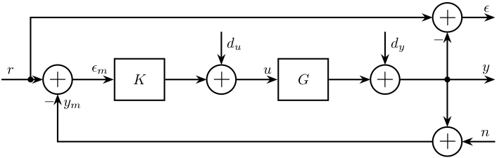
2.2 One Degree of Freedom - Alternative
\begin{tikzpicture} \node[addb={+}{}{}{}{-}] (addfb) at (0, 0){}; \node[block, right=1 of addfb] (K){$K$}; \node[block, right=1 of K] (G){$G$}; \node[addb={+}{}{}{}{}, right=1 of G] (adddy){}; \node[block, above=0.7 of adddy] (Gd){$G_d$}; \node[addb={+}{}{}{}{}, below right=1 and 1 of adddy] (addn) {}; \draw[<-] (addfb.west) -- ++(-0.8, 0) node[above right]{$r$}; \draw[->] (addfb.east) -- (K.west); \draw[->] (K.east) -- (G.west) node[above left]{$u$}; \draw[->] (G.east) -- (adddy.west); \draw[<-] (addn.east) -- ++(0.8, 0) coordinate[](endpos) node[above left]{$n$}; \draw[->] (adddy.east) -- (G-|endpos) node[above left]{$y$}; \draw[->] (G-|addn) node[branch]{} -- (addn.north); \draw[->] (addn.west) -| (addfb.south) node[below right]{$y_m$}; \draw[<-] (adddy.north) -- (Gd.south); \draw[<-] (Gd.north) -- ++(0, 0.7) node[below right]{$d$}; \end{tikzpicture}
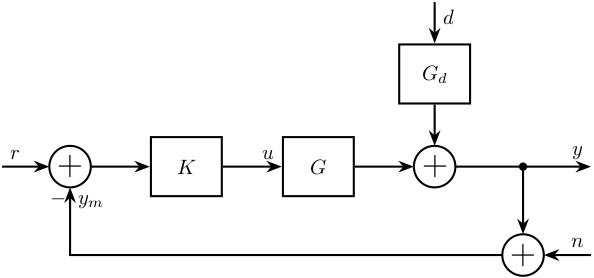
2.3 One Degree of Freedom - Small
\begin{tikzpicture} \node[addb={+}{}{}{}{-}] (addfb) at (0, 0){}; \node[block, right=0.6 of addfb] (K){$K$}; \node[block, right=0.6 of K] (G){$G$}; \node[addb={+}{}{}{}{}, right=0.6 of G] (adddy){}; \node[addb={+}{}{}{}{}, below right=0.6 and 0.6 of adddy] (addn) {}; \draw[<-] (addfb.west) -- ++(-0.6, 0) node[above right]{$r$}; \draw[->] (addfb.east) -- (K.west); \draw[->] (K.east) -- (G.west) node[above left]{$u$}; \draw[->] (G.east) -- (adddy.west); \draw[<-] (addn.east) -- ++(0.6, 0) coordinate[](endpos) node[above left]{$n$}; \draw[->] (adddy.east) -- (G-|endpos) node[above left]{$y$}; \draw[->] (adddy-|addn) node[branch]{} -- (addn.north); \draw[->] (addn.west) -| (addfb.south) node[below right]{$y_m$}; \draw[<-] (adddy.north) -- ++(0, 0.6) node[below right]{$d$}; \end{tikzpicture}
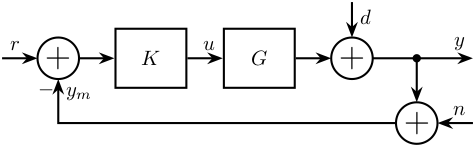
2.4 One Degree of Freedom - Alternative bis
\begin{tikzpicture} \node[addb={+}{}{}{}{-}] (addfb) at (0, 0){}; \node[block, right=1 of addfb] (K){$K$}; \node[addb={+}{}{}{}{}, right=1 of K] (adddu){}; \node[block, right=1 of adddu] (G){$G$}; \node[addb={+}{}{}{}{}, right=1 of G] (adddy){}; \draw[->] (addfb.east) -- (K.west) node[above left]{$\epsilon_{m}$}; \draw[->] (K.east) -- (adddu.west) node[above left]{$u$}; \draw[->] (adddu.east) -- (G.west); \draw[->] (G.east) -- (adddy.west); \draw[->] (adddy.east) -- ++(1.5, 0) node[above left]{$y$}; \draw[->] ($(adddy.east)+(0.8, 0)$) node[branch]{} -- ++(0, -1) -| (addfb.south); \draw[<-] (addfb.west) -- ++(-1, 0) node[above right]{$r$}; \draw[<-] (adddu.north) -- ++(0, 1) node[below left]{$d_1$}; \draw[<-] (adddy.north) -- ++(0, 1) node[below left]{$d_2$}; \end{tikzpicture}
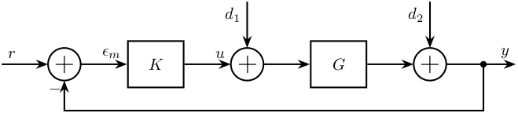
2.5 One Degree of Freedom - Check Stability
\begin{tikzpicture} \node[block] (K){$-K$}; \node[addb={+}{}{}{}{}, right=1 of K] (adddu){}; \node[block, below=1 of K] (G){$G$}; \node[addb={+}{}{}{}{}, left=1 of G] (adddy){}; \draw[->] (K.east) -- (adddu.west); \draw[->] (adddu|-G) node[branch]{} -- ++(0, -1) coordinate(botpos) node[above right]{$u$}; \draw[->] (adddu.south) |- (G.east); \draw[->] (G.west) -- (adddy.east); \draw[->] (adddy|-K) node[branch]{} -- ++(0, 1) coordinate(toppos) node[below left]{$y$}; \draw[->] (adddy.north) |- (K.west); \draw[<-] (adddu.north) -- (adddu|-toppos) node[below right]{$d_u$}; \draw[<-] (adddy.south) -- (adddy|-botpos) node[above left]{$d_y$}; \end{tikzpicture}

2.6 One Degree of Freedom - Measurement transfer function
\begin{tikzpicture} \node[addb={+}{}{}{}{-}] (addfb) at (0, 0){}; \node[block, right=1 of addfb] (K){$K$}; \node[block, right=1 of K] (G){$G$}; \node[addb={+}{}{}{}{}, right=1 of G] (adddy){}; \node[block, above=0.7 of adddy] (Gd){$G_d$}; \node[addb={+}{}{}{}{}, below right=1 and 1 of adddy] (addn) {}; \node[block] (Gm) at (G|-addn) {$G_m$}; \draw[<-] (addfb.west) -- ++(-0.8, 0) node[above right]{$r$}; \draw[->] (addfb.east) -- (K.west); \draw[->] (K.east) -- (G.west) node[above left]{$u$}; \draw[->] (G.east) -- (adddy.west); \draw[<-] (addn.east) -- ++(0.8, 0) coordinate[](endpos) node[above left]{$n$}; \draw[->] (adddy.east) -- (G-|endpos) node[above left]{$y$}; \draw[->] (G-|addn) node[branch]{} -- (addn.north); \draw[->] (addn.west) -- (Gm.east); \draw[->] (Gm.west) -| (addfb.south); \draw[<-] (adddy.north) -- (Gd.south); \draw[<-] (Gd.north) -- ++(0, 0.7) node[below right]{$d$}; \end{tikzpicture}
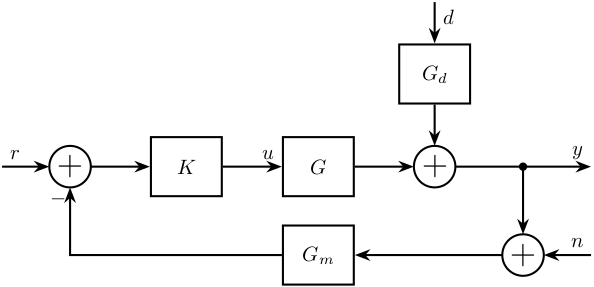
2.7 Two Degrees of Freedom
\begin{tikzpicture} \node[block={1cm}{1.5cm}] (K) {$K$}; \node[block, right=1 of K] (G) {$G$}; \node[addb, right=1 of G] (addy) {}; \node[addb, below right=0.7 and 1 of addy] (addn) {}; % Inputs of the controllers \coordinate[] (inputr) at ($(K.south west)!0.75!(K.north west)$); \coordinate[] (inputy) at ($(K.south west)!0.25!(K.north west)$); % Connections and labels \draw[<-] (inputr) -- ++(-0.8, 0) node[above right]{$r$}; \draw[->] (K.east) -- (G.west) node[above left]{$u$}; \draw[->] (G.east) -- (addy.west); \draw[->] (addn.west) -| ($(inputy) - (0.8, 0)$) -- (inputy) node[above left]{$y_m$}; \draw[->] (addy.east) -| (addn.north) node[above right]{$y$}; \draw[<-] (addy.north) -- ++(0, 0.8) node[below right]{$d$}; \draw[<-] (addn.east) -- ++(0.8, 0) node[above left]{$n$}; \end{tikzpicture}
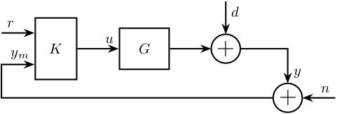
2.8 Two Degrees of Freedom - Alternative
\begin{tikzpicture} \node[block={1.5cm}{1cm}] (K) {$K$}; \node[block, right=1 of K] (G) {$G$}; \node[addb, right=1 of G] (adddy) {}; \node[block, above=0.7 of adddy] (Gd){$G_d$}; \node[addb, below right=0.7 and 1 of adddy] (addn) {}; % Inputs of the controllers \coordinate[] (inputr) at ($(K.south west)!0.75!(K.north west)$); \coordinate[] (inputy) at ($(K.south west)!0.25!(K.north west)$); % Connections and labels \draw[<-] (inputr) -- ++(-0.8, 0) node[above right]{$r$}; \draw[->] (K.east) -- (G.west) node[above left]{$u$}; \draw[->] (G.east) -- (adddy.west); \draw[->] (addn.west) -| ($(inputy) - (0.8, 0)$) -- (inputy) node[above left]{$y_m$}; \draw[->] (adddy.east) -| (addn.north) node[above right]{$y$}; \draw[<-] (adddy.north) -- (Gd.south); \draw[<-] (Gd.north) -- ++(0, 0.7) node[below right]{$d$}; \draw[<-] (addn.east) -- ++(0.8, 0) node[above left]{$n$}; \end{tikzpicture}

2.9 Two Degrees of Freedom - Simple
\begin{tikzpicture} \node[block={1.5cm}{1cm}] (K) {$K$}; \node[block, right=0.6 of K] (G) {$G$}; % Inputs of the controllers \coordinate[] (inputr) at ($(K.south west)!0.75!(K.north west)$); \coordinate[] (inputy) at ($(K.south west)!0.25!(K.north west)$); % Connections and labels \draw[<-] (inputr) -- ++(-0.8, 0) node[above right]{$r$}; \draw[->] (K.east) -- (G.west) node[above left]{$u$}; \draw[->] (G.east) -| ++(1, -1) -| ($(inputy) - (0.8, 0)$) node[above right]{$y$} -- (inputy); \end{tikzpicture}
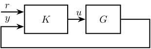
2.10 Two Degrees of Freedom - separated
\begin{tikzpicture} \node[block] (Kr) at (0, 0){$K_r$}; \node[addb={+}{}{}{}{-}, right=1 of Kr] (addfb){}; \node[block, right=1 of addfb] (K){$K_y$}; \node[block, right=1 of K] (G){$G$}; \node[addb={+}{}{}{}{}, right=1 of G] (adddy){}; \node[block, above=0.7 of adddy] (Gd){$G_d$}; \node[addb={+}{}{}{}{}, below right=1 and 1 of adddy] (addn) {}; \draw[<-] (Kr.west) -- ++(-0.8, 0) node[above right]{$r$}; \draw[->] (Kr.east) -- (addfb.west); \draw[->] (addfb.east) -- (K.west); \draw[->] (K.east) -- (G.west) node[above left]{$u$}; \draw[->] (G.east) -- (adddy.west); \draw[<-] (addn.east) -- ++(0.8, 0) coordinate[](endpos) node[above left]{$n$}; \draw[->] (adddy.east) -- (G-|endpos) node[above left]{$y$}; \draw[->] (G-|addn) node[branch]{} -- (addn.north); \draw[->] (addn.west) -| (addfb.south) node[below right]{$y_m$}; \draw[<-] (adddy.north) -- (Gd.south); \draw[<-] (Gd.north) -- ++(0, 0.7) node[below right]{$d_y$}; \end{tikzpicture}
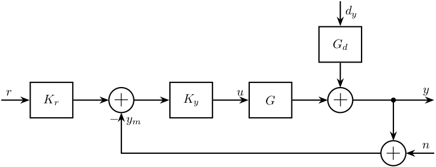
2.11 One Degree of freedom with ADC and DAC
\begin{tikzpicture} \node[addb={+}{}{}{}{-}] (addfb) {}; \node[block, right=1 of addfb] (K) {$K$}; \node[DAC, right=1 of K] (DAC) {DAC}; \node[block, right=1 of DAC] (G) {$G$}; \node[addb, right=1 of G] (addy) {}; \node[addb, below right=1 of addy] (addn) {}; \node[ADC, left=1 of addn] (ADC) {ADC}; % Connections and labels \draw[->] (K.east) -- node[sloped]{$/$}(DAC.west); \draw[->] (DAC.east) -- (G.west) node[above left]{$u$}; \draw[->] (G.east) -- (addy.west); \draw[->] (addy.east) -| (addn.north) node[above right]{$y$}; \draw[<-] (addy.north) -- ++(0, 0.8) node[below right]{$d$}; \draw[<-] (addn.east) -- ++(0.8, 0) node[above left]{$n$}; \draw[->] (addn.west) -- (ADC.east); \draw[->] (ADC.west) -| node[near start, sloped]{$/$} (addfb.south) node[below right]{$y_m$}; \draw[->] (addfb.east) -- node[sloped]{$/$} (K.west) node[above left]{$\epsilon_m$}; \draw[<-] (addfb.west) -- node[sloped]{$/$} ++(-1, 0) node[above right]{$r$}; \end{tikzpicture}

3 Feedforward
3.1 Simple Adaptive feedforward
\begin{tikzpicture} \node[block={2.0cm}{2.0cm}] (P) {$P$}; \node[above] at (P.north) {System}; \node[block={2.0cm}{1.0cm}, below=1 of P, align=center, opacity=0] (Kinv) {Adaptive\\Filter}; \draw[->] ($(Kinv.south west) + (0, -0.3)$) -- ($(Kinv.north east) + (0, 0.3)$); \node[block={2.0cm}{1.0cm}, below=1 of P, align=center] (K) {Adaptive\\Filter}; % Input and outputs coordinates \coordinate[] (inputa) at ($(P.south west)!0.75!(P.north west)$); \coordinate[] (inputb) at ($(P.south west)!0.25!(P.north west)$); % Connections and labels \draw[<-] (inputa) -- ++(-1.5, 0) coordinate(d) node[above right]{$d$}; \draw[->] ($(d)+(0.5, 0)$)node[branch]{} |- (K.west); \draw[->] (P.east) -- ++(1, 0) coordinate(e) node[above left]{$\epsilon$}; \draw[->] ($(e)+(-0.5, 0)$)node[branch]{} |- (K.east); \draw[<-] (inputb) -- ++(-0.5, 0) -- ++(0, -1) -| (K.north); \end{tikzpicture}
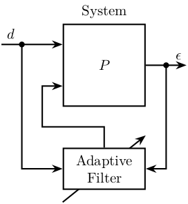
4 General Control Configuration
4.1 Generalized Plant
\begin{tikzpicture} \node[block={2.0cm}{2.0cm}] (P) {$P$}; \node[above] at (P.north) {Generalized Plant}; % Input and outputs coordinates \coordinate[] (inputw) at ($(P.south west)!0.75!(P.north west)$); \coordinate[] (inputu) at ($(P.south west)!0.25!(P.north west)$); \coordinate[] (outputz) at ($(P.south east)!0.75!(P.north east)$); \coordinate[] (outputv) at ($(P.south east)!0.25!(P.north east)$); % Connections and labels \draw[<-] (inputw) -- ++(-0.8, 0) node[above right]{$w$}; \draw[<-] (inputu) -- ++(-0.8, 0) node[above right]{$u$}; \draw[->] (outputz) -- ++(0.8, 0) node[above left]{$z$}; \draw[->] (outputv) -- ++(0.8, 0) node[above left]{$v$}; \end{tikzpicture}

4.2 General Control configuration
\begin{tikzpicture} % Blocs \node[block={2.0cm}{2.0cm}] (P) {$P$}; \node[above] at (P.north) {Generalized Plant}; \node[block={1.5cm}{1.5cm}, below=0.7 of P] (K) {$K$}; % Input and outputs coordinates \coordinate[] (inputw) at ($(P.south west)!0.75!(P.north west)$); \coordinate[] (inputu) at ($(P.south west)!0.25!(P.north west)$); \coordinate[] (outputz) at ($(P.south east)!0.75!(P.north east)$); \coordinate[] (outputv) at ($(P.south east)!0.25!(P.north east)$); % Connections and labels \draw[<-] (inputw) node[above left]{$w$} -- ++(-0.8, 0); \draw[<-] (inputu) node[above left]{$u$} -- ++(-0.8, 0) |- (K.west); \draw[->] (outputz) node[above right]{$z$} -- ++(0.8, 0); \draw[->] (outputv) node[above right]{$v$} -- ++(0.8, 0) |- (K.east); \end{tikzpicture}

4.3 General Control configuration - Names
\begin{tikzpicture} % Blocs \node[block={2.0cm}{2.0cm}] (P) {$P$}; \node[block={1.5cm}{1.5cm}, below=0.7 of P] (K) {$K$}; % Input and outputs coordinates \coordinate[] (inputw) at ($(P.south west)!0.75!(P.north west)$); \coordinate[] (inputu) at ($(P.south west)!0.25!(P.north west)$); \coordinate[] (outputz) at ($(P.south east)!0.75!(P.north east)$); \coordinate[] (outputv) at ($(P.south east)!0.25!(P.north east)$); % Connections and labels \draw[<-] (inputw) node[above left, align=right]{(weighted)\\exogenous inputs\\$w$} -- ++(-1.5, 0); \draw[<-] (inputu) -- ++(-0.8, 0) |- node[left, near start, align=right]{control signals\\$u$} (K.west); \draw[->] (outputz) node[above right, align=left]{(weighted)\\exogenous outputs\\$z$} -- ++(1.5, 0); \draw[->] (outputv) -- ++(0.8, 0) |- node[right, near start, align=left]{sensed output\\$v$} (K.east); \end{tikzpicture}

4.4 General Control Configuration - Diagonal Control
\begin{tikzpicture} % Blocs \node[block={3cm}{2cm}] (P) {P}; \node[block={3cm}{2cm}, below=1 of P, scale=0.8] (K) {\[% \begin{pmatrix} K_{T_x} & 0 & \cdots & 0 \\ 0 & \ddots & \ddots & \vdots \\ \vdots & \ddots & \ddots & 0 \\ 0 & \cdots & 0 & K_{\theta_z} \\ \end{pmatrix} \]}; % Block names \node[above] at (P.north) {End Station}; \node[above] at (K.north) {Controller}; % Input and outputs coordinates \coordinate[] (inputw) at ($(P.south west)!0.75!(P.north west)$); \coordinate[] (inputu) at ($(P.south west)!0.25!(P.north west)$); \coordinate[] (outputz) at ($(P.south east)!0.75!(P.north east)$); \coordinate[] (outputv) at ($(P.south east)!0.25!(P.north east)$); % Connections and labels \draw[<-] (inputw) node[above left]{$w$} -- ++(-0.8, 0); \draw[<-] (inputu) node[above left]{$F$} -- ++(-0.8, 0) |- (K.west); \draw[->] (outputz) node[above right]{$z$} -- ++(0.8, 0); \draw[->] (outputv) node[above right]{$d$} -- ++(0.8, 0) |- (K.east); \end{tikzpicture}

4.5 General Control Configuration - 1DoF Feedback
\begin{tikzpicture} % Blocs \node[block] (G) {$G$}; \node[addb, right=1 of G] (addy) {}; \node[block, above=0.5 of addy] (Gd) {$G_d$}; \node[addb, right=1 of addy] (addn) {}; % Inputs \coordinate[above left=2.2 and 1.2 of G] (d); \coordinate[above=1 of d] (n); % Outputs \coordinate[above right=2.2 and 1.2 of addn] (y); \coordinate[above=1 of y] (F); \coordinate (u) at (n|-G); \coordinate (v) at (F|-G); \node[fit={($(n) + (0.5, 0.2)$) ($(v|-G.south) - (0.5, 0.2)$)}, inner sep=0pt, draw, dashed, color=gray, label={Generalized Plant}] (P) {}; \node[draw, block, below=1 of P] (K) {$K$}; % Connections \draw[->] (G.east) -- (addy.west); \draw[->] (addy.east) -- (addn.west); \draw[->] (Gd.south) -- (addy.north); \draw[<-] (addn.north) -- ++(0, 0.5); \draw[->] (d) -| (Gd.north); \draw[->] (n) -| (addn.north); \draw[->] ($(addn.west) + (-0.4, 0)$)node[branch]{} |- (y); \draw[->] ($(G.west) + (-0.4, 0)$)node[branch]{} |- (F); \draw[->] (addn.east) -- (v) |- (K.east); \draw[->] (K.west) -| (u) -- (G.west); % Labels \node[above right] (un) at (u) {$u$}; \node[above left] (vn) at (v) {$v$}; \node[above right] (dn) at (d) {$d$}; \node[above right] (nn) at (n) {$n$}; \node[above left] (yn) at (y) {$y$}; \node[above left] (Fn) at (F) {$u$}; \draw [decoration={brace, raise=7pt}, decorate] (dn.south west) -- node[left=8pt]{$w$} (nn.north west); \draw [decoration={brace, mirror, raise=5pt}, decorate] (yn.south east) -- node[right=6pt]{$z$} (Fn.north east); \end{tikzpicture}
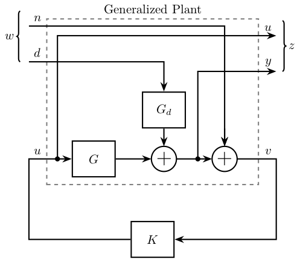
4.6 Weighted General Control Configuration
\begin{tikzpicture} % Blocs \node[block={2.0cm}{2.0cm}] (P) {$\tilde{P}$}; \node[block={1.5cm}{1.5cm}, below=0.7 of P] (K) {$K$}; % Input and outputs coordinates \coordinate[] (inputw) at ($(P.south west)!0.75!(P.north west)$); \coordinate[] (inputu) at ($(P.south west)!0.25!(P.north west)$); \coordinate[] (outputz) at ($(P.south east)!0.75!(P.north east)$); \coordinate[] (outputv) at ($(P.south east)!0.25!(P.north east)$); % Weights \node[block, right=0.7 of outputz] (Wz) {$W_z$}; \node[block, left =0.7 of inputw] (Ww) {$W_w$}; % Connections and labels \draw[<-] (Ww.west) -- ++(-1, 0) node[above right](w){$w$}; \draw[->] (Ww.east) -- (inputw) node[above left]{$\tilde{w}$}; \draw[<-] (inputu) -- (w|-inputu) |- node[left, near start]{$u$} (K.west); \draw[->] (outputz) -- (Wz.west) node[above left]{$\tilde{z}$}; \draw[->] (Wz.east) -- ++(1, 0) node[above left](z){$z$}; \draw[->] (outputv) -- (z|-outputv) |- node[right, near start](v){$v$} (K.east); % Weighted plant \node[fit={($(Ww.north west) + (-0.4, 0.2)$) ($(Wz.east|-P.south) + (0.4, -0.2)$)}, inner sep=0pt, draw, dashed, color=gray, label={Generalized Weighted Plant $P$}] (P) {}; \end{tikzpicture}

4.7 General Control Configuration - Weighted 1DoF Feedback
\begin{tikzpicture} % Blocs \node[block] (G) {$G$}; \node[addb, right=1 of G] (addy) {}; \node[block, above=0.5 of addy] (Gd) {$G_d$}; \node[block, above=2.0 of G] (Wd) {$W_d$}; \node[block, above=0.5 of Wd] (Wn) {$W_n$}; \node[addb, right=1 of addy] (addn) {}; \node[block, above right=1.5 and 0.2 of addn] (Wu) {${W_u}^{-1}$}; \node[block, above=0.5 of Wu] (We) {${W_e}^{-1}$}; % Inputs \coordinate[left=1.2 of Wd] (d); \coordinate[left=1.2 of Wn] (n); % Outputs \coordinate[right=1.2 of We] (y); \coordinate[right=1.2 of Wu] (F); \coordinate (u) at (n|-G); \coordinate (v) at (F|-G); \node[fit={($(n) + (0, 0.5) + (0.5, 0.2)$) ($(v|-G.south) - (0.5, 0.2)$)}, inner sep=0pt, draw, dashed, color=gray, label={Generalized Weighted Plant $P$}] (P) {}; \node[block={1.5cm}{1.5cm}, below=0.7 of P] (K) {$K$}; % Connections \draw[->] (G.east) -- (addy.west); \draw[->] (addy.east) -- (addn.west); \draw[->] (Gd.south) -- (addy.north); \draw[<-] (addn.north) -- ++(0, 0.5); \draw[->] (d) -- (Wd.west); \draw[->] (Wd.east) node[above right]{$\tilde{d}$} -| (Gd.north); \draw[->] (n) -- (Wn.west); \draw[->] (Wn.east) node[above right]{$\tilde{n}$} -| (addn.north); \draw[->] ($(addn.west) + (-0.4, 0)$) node[branch]{} |- (We.west) node[above left]{$\tilde{y}$}; \draw[->] ($(G.west) + (-0.4, 0)$) node[branch]{} |- (Wu.west) node[above left]{$\tilde{u}$}; \draw[->] (We.east) -- (y); \draw[->] (Wu) -- (F); \draw[->] (addn.east) -- (v) |- (K.east); \draw[->] (K.west) -| (u) -- (G.west); % Labels \node[above right] (un) at (u) {$u$}; \node[above left] (vn) at (v) {$v$}; \node[above right] (dn) at (d) {$d$}; \node[above right] (nn) at (n) {$n$}; \node[above left] (yn) at (y) {$y$}; \node[above left] (Fn) at (F) {$u$}; % W and Z brackets \draw [decoration={brace, raise=7pt}, decorate] (dn.south west) -- node[left=8pt]{$w$} (nn.north west); \draw [decoration={brace, raise=5pt}, decorate] (yn.north east) -- node[right=6pt]{$z$} (Fn.south east); \end{tikzpicture}

4.8 Uncertainty block
\begin{tikzpicture} % Blocs \node[block={2.0cm}{2.0cm}] (P) {$P$}; \node[block={1.5cm}{1.2cm}, below=0.7 of P] (K) {$K$}; \node[block={1.5cm}{1.2cm}, above=0.7 of P] (delta) {$\Delta$}; % Input and outputs coordinates \coordinate[] (inputudelta) at ($(P.north west)!0.25!(P.south west)$); \coordinate[] (inputw) at ($(P.north west)!0.50!(P.south west)$); \coordinate[] (inputu) at ($(P.north west)!0.75!(P.south west)$); \coordinate[] (outputydelta) at ($(P.north east)!0.25!(P.south east)$); \coordinate[] (outputz) at ($(P.north east)!0.50!(P.south east)$); \coordinate[] (outputv) at ($(P.north east)!0.75!(P.south east)$); % Connections and labels \draw[<-] (inputw) -- ++(-1.0, 0) node[above left]{$w$}; \draw[<-] (inputu) -- ++(-0.8, 0) |- node[near start, left]{$u$} (K.west); \draw[<-] (inputudelta) -- ++(-0.8, 0) |- node[near start, left]{$u_\Delta$} (delta.west); \draw[->] (outputz) -- ++(1.0, 0) node[above right]{$z$}; \draw[->] (outputv) -- ++(0.8, 0) |- node[near start, right]{$v$} (K.east); \draw[->] (outputydelta) -- ++(0.8, 0) |- node[near start, right]{$y_\Delta$} (delta.east); \end{tikzpicture}
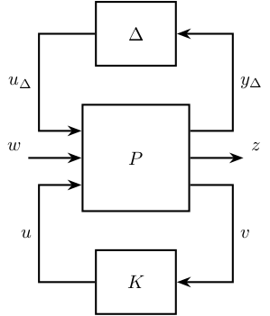
4.9 Uncertainty block - NDelta configuration
\begin{tikzpicture} % Blocs \node[block={2.0cm}{2.0cm}] (P) {$N$}; \node[block={1.5cm}{1.2cm}, above=0.7 of P] (delta) {$\Delta$}; % Input and outputs coordinates \coordinate[] (inputudelta) at ($(P.north west)!0.25!(P.south west)$); \coordinate[] (inputw) at ($(P.north west)!0.75!(P.south west)$); \coordinate[] (outputydelta) at ($(P.north east)!0.25!(P.south east)$); \coordinate[] (outputz) at ($(P.north east)!0.75!(P.south east)$); % Connections and labels \draw[<-] (inputw) -- ++(-1.0, 0) node[above left]{$w$}; \draw[<-] (inputudelta) -- ++(-0.8, 0) |- node[near start, left]{$u_\Delta$} (delta.west); \draw[->] (outputz) -- ++(1.0, 0) node[above right]{$z$}; \draw[->] (outputydelta) -- ++(0.8, 0) |- node[near start, right]{$y_\Delta$} (delta.east); \end{tikzpicture}
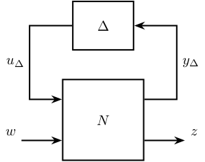
4.10 M Delta Analysis
\begin{tikzpicture} % Blocs \node[block={1.5cm}{1.2cm}] (M) {$M$}; \node[block={1.5cm}{1.2cm}, above=0.7 of M] (delta) {$\Delta$}; % Connections and labels \draw[<-] (M.west) -- ++(-1.5, 0) |- node[near start, left ]{$u_\Delta$} (delta.west); \draw[->] (M.east) -- ++( 1.5, 0) |- node[near start, right]{$y_\Delta$} (delta.east); \end{tikzpicture}
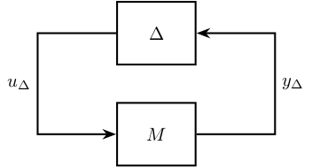
5 Control Architectures
5.1 PID
\begin{tikzpicture} % Blocs \node[block] (KP) {$K_P$}; \node[block, above=0.7 of KP] (KD) {$K_D$}; \node[block, below=0.7 of KP] (KI) {$K_I$}; \node[block, right=1 of KD] (deriv) {$\frac{d\hphantom{t}}{dt}$}; \node[block, right=1 of KI] (int) {$\int$}; \node[addb, right=2.5 of KP] (add) {}; \node[branch, left=1 of KP] (connect) {}; % Connections and labels \draw[->] (KD.east) -- (deriv); \draw[->] (KI.east) -- (int); \draw[->] (deriv) -| (add); \draw[->] (KP) -- (add); \draw[->] (int) -| (add); \draw[->] (connect) |- (KD); \draw[->] (connect) -- (KP); \draw[->] (connect) |- (KI); \draw[->] (add.east) -- ++(0.8, 0) node[above left]{$u$}; \draw[] (connect.west) -- ++(-0.8, 0) node[above right]{$\epsilon$}; \end{tikzpicture}
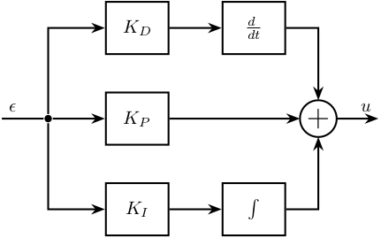
6 Input Output Uncertainty
6.1 Input and output uncertainty
\begin{tikzpicture} % Blocs \node[block] (G) {$G$}; \node[branch, right=1 of G] (Bo) {}; \node[block, above right=0.7 and 0.7 of Bo] (Eo) {$E_O$}; \node[addb, right=3.5 of G] (addo) {}; \node[addb, left=1 of G] (addi) {}; \node[block, below left=0.7 and 0.7 of addi] (Ei) {$E_I$}; \node[branch, left=2.5 of addi] (Bi) {}; % Connections and labels \draw[->] (Bi.center) |- (Ei.west); \draw[->] (Ei.east) -| (addi.south); \draw[->] ($(Bi)+(-0.5, 0)$) -- (addi.west); \draw[->] (addi.east) -- (G.west); \draw[->] (G.east) -- (addo.west); \draw[->] (Bo.center) |- (Eo.west); \draw[->] (Eo.east) -| (addo.north); \draw[->] (addo.east) -- ++(0.5, 0); \end{tikzpicture}

6.2 Input Multiplicative Uncertainty - Feedback
\begin{tikzpicture} % Blocs \node[block] (G) {$G$}; \node[addb, left=1 of G] (addi) {}; \node[block, above left=0.7 and 0.4 of addi] (deltai) {$\Delta_I$}; \node[block, left=0.7 of deltai] (wi) {$w_I$}; \node[block, left=6.8 of G] (K){$K$}; \node[addb={+}{}{}{}{-}, left=1 of K] (addfb){}; % Connections and labels \draw[->] (addfb.east )-- (K.west); \draw[->] (K.east )-- (addi.west); \draw[->] ($(K.east)+(1.0, 0)$)coordinate[](start) node[branch]{} |- (wi.west); \draw[->] (wi.east) -- (deltai.west); \draw[->] (deltai.east) -| (addi.north); \draw[->] (addi.east) -- (G.west); \draw[->] (G.east) -- ++(1.5, 0); \draw[->] ($(G.east)+(0.8, 0)$) node[branch]{} -- ++(0, -1.5) -| (addfb.south); \draw[<-] (addfb.west) -- ++(-0.8, 0); \node[fit={($(wi.north west)+(-0.8, 0)$) (G.south east)}, inner sep=10pt, draw, dashed, color=gray, label={$G_p$}] (Gp) {}; \end{tikzpicture}
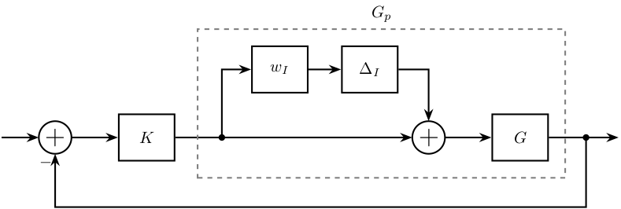
6.3 Input Multiplicative Uncertainty - Feedback - weight
\begin{tikzpicture} % Blocs \node[block] (G) {$G$}; \node[addb, left=0.5 of G] (addi) {}; \node[block, above left=0.4 and 0.4 of addi] (deltai) {$\Delta_I$}; \node[block, left=0.5 of deltai] (wi) {$W_I$}; \node[block, left=5.4 of G] (K){$K$}; % \node[addb={+}{}{}{}{-}, left=0.5 of K] (addfb){}; \coordinate[left=0.5 of K] (fb){}; \node[addb, right=0.8 of G] (addw){}; \node[block, right=0.8 of addw] (Wp){$W_p$}; % Connections and labels % \draw[->] (addfb.east )-- (K.west); \draw[->] (K.east )-- (addi.west); \draw[->] ($(K.east)+(0.5, 0)$)coordinate[](start) node[branch]{} node[above right]{$u$} |- (wi.west); \draw[->] (wi.east) -- node[midway, above]{$y_\Delta$} (deltai.west); \draw[->] (deltai.east)node[above right]{$u_\Delta$} -| (addi.north); \draw[->] (addi.east) -- (G.west); \draw[->] (G.east) -- (addw.west); \draw[->] (addw.east) -- (Wp.west); \draw[<-] (addw.north) -- ++(0, 0.6) node[below right]{$w$}; \draw[->] (Wp.east) -- ++(0.6, 0) node[above left]{$z$}; \draw[->] ($(addw.east)+(0.3, 0)$) node[branch]{} -- ++(0, -1.1) -| (fb) -- (K.west)node[above left]{$-$}node[below left]{$v$}; % \draw[<-] (addfb.west) -- ++(-0.6, 0); \node[fit={($(wi.north west)+(-0.4, 0)$) (G.south east)}, inner sep=8pt, draw, dashed, color=gray, label={$G_p$}] (Gp) {}; \end{tikzpicture}
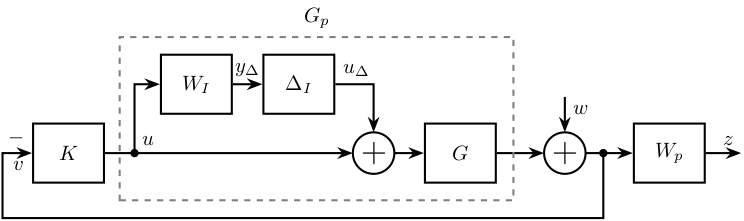
6.4 Input Multiplicative Uncertainty - Feedback - weight - bis
\begin{tikzpicture} % Blocs \node[block] (G) {$G$}; \node[addb, left=0.5 of G] (addi) {}; \node[block, above left=0.4 and 0.2 of addi] (deltai) {$\Delta_I$}; \node[block, left=0.5 of deltai] (wi) {$W_I$}; \node[block, left=5.2 of G] (K){$K$}; \coordinate[left=0.5 of K] (fb){}; \node[addb, right=0.5 of G] (addw){}; \node[block, right=0.8 of addw] (Wp){$W_p$}; % Connections and labels \draw[->] (K.east )-- (addi.west); \draw[->] ($(K.east)+(0.5, 0)$)coordinate[](start) |- (wi.west); \draw[->] (wi.east) -- (deltai.west); \draw[->] (deltai.east) -| (addi.north); \draw[->] (addi.east) -- (G.west); \draw[->] (G.east) -- (addw.west); \draw[->] (addw.east) -- (Wp.west); \draw[<-] (addw.north) -- ++(0, 0.6) node[below right]{$d$}; \draw[->] (Wp.east) -- ++(0.6, 0) node[above left]{$\hat{y}$}; \draw[->] ($(addw.east)+(0.3, 0)$) node[branch]{} -- ++(0, -1.1) -| (fb) -- (K.west)node[above left]{$-$}; \node[fit={($(wi.north west)+(-0.4, 0)$) (G.south east)}, inner sep=5pt, draw, dashed, color=gray, label={$G_p$}] (Gp) {}; \end{tikzpicture}
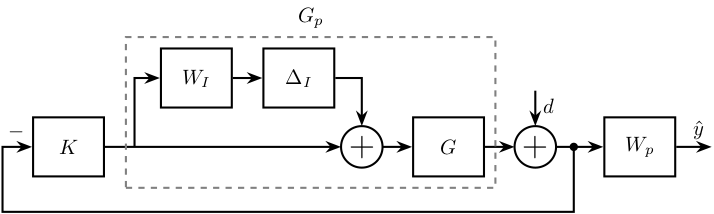
6.5 Inverse Multiplicative Uncertainty - Feedback
\begin{tikzpicture} % Blocs \node[block] (G) {$G$}; \node[branch, left=1 of G] (branch) {}; \node[block, above left=0.7 and 0.7 of branch] (deltai) {$\Delta_{iI}$}; \node[block, left=0.7 of deltai] (wi) {$w_{iI}$}; \node[addb, left=4 of branch] (addu) {}; \node[block, left=1 of addu] (K) {$K$}; \node[addb={+}{}{}{}{-}, left=1 of K] (addfb) {}; \coordinate[] (end) at ($(G.east)+(0.7, 0)$); % Connections and labels \draw[->] (addu.east) -- (G.west); \draw[<-] (addu.north) |- (wi.west); \draw[<-] (wi.east) node[above right]{$u_\Delta$} -- (deltai.west); \draw[<-] (deltai.east) node[above right]{$y_\Delta$} -| (branch); \draw[->] (G.east) -- ++(1.5, 0); \draw[->] (end)node[branch]{} -- ++(0, -1.3) -| (addfb.south); \draw[->] (addfb.east) -- (K.west); \draw[->] (K.east) -- (addu.west); \draw[<-] (addfb.west) -- ++(-0.8, 0); \node[fit={(addu.west|-G.south) (G.east|-deltai.north)}, inner sep=10pt, draw, dashed, color=gray] (Gp) {}; \end{tikzpicture}

6.6 Six types of uncertainty
6.6.1 Additive Uncertainty
\begin{tikzpicture} \node[block] (G) {$G$}; \node[branch] at (-2.5, 0) (branch) {}; \node[addb] at ( 2.5, 0) (add) {}; \node[block, above left=0.7 and 0.1 of G] (wa) {$w_A$}; \node[block, above right=0.7 and 0.1 of G] (da) {$\Delta_A$}; % Connections and labels \draw[->] ($(branch)+(-1, 0)$) -- (G.west); \draw[->] (G.east) -- (add.west); \draw[->] (add.east) -- ++(1, 0); \draw[->] (branch) |- (wa.west); \draw[->] (wa.east) -- (da.west); \draw[->] (da.east) -| (add.north); \node[fit={(branch|-wa.north) (add.east|-G.south)}, inner sep=10pt, draw, dashed, color=gray, label={$G_p$}] (Gp) {}; \end{tikzpicture}
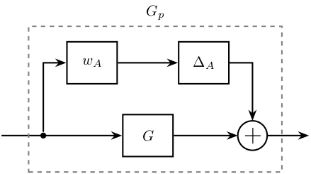
6.6.2 Input Multiplicative Uncertainty
\begin{tikzpicture} % Blocs \node[block] (G) {$G$}; \node[addb, left=0.75 of G] (addi) {}; \node[block, above left=0.7 and 0.2 of addi] (deltai) {$\Delta_I$}; \node[block, left=0.75 of deltai] (wi) {$w_I$}; % Connections and labels \draw[->] ($(G.west)+(-5.2, 0)$)coordinate[](start) node[branch]{} |- (wi.west); \draw[->] ($(start)+(-0.75, 0)$) -- (addi.west); \draw[->] (wi.east) -- (deltai.west); \draw[->] (deltai.east) -| (addi.north); \draw[->] (addi.east) -- (G.west); \draw[->] (G.east) -- ++(0.75, 0); \node[fit={(start|-wi.north) (G.south east)}, inner sep=10pt, draw, dashed, color=gray, label={$G_p$}] (Gp) {}; \end{tikzpicture}
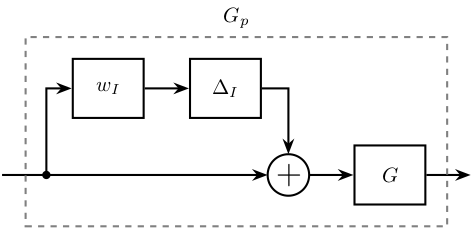
6.6.3 Output Multiplicative Uncertainty
\begin{tikzpicture} % Blocs \node[block] (G) {$G$}; \node[branch, right=0.5 of G] (branch) {}; \node[block, above right=0.7 and 1.2 of G] (wo) {$w_{O}$}; \node[block, right=0.7 of wo] (do) {$\Delta_{O}$}; \node[addb] at (5.5, 0) (addo) {}; % Connections and labels \draw[<-] (G.west) -- ++(-1, 0); \draw[->] (G.east) -- (addo.west); \draw[->] (addo.east) -- ++(1, 0); \draw[->] (branch) |- (wo.west); \draw[->] (wo.east) -- (do.west); \draw[->] (do.east) -| (addo.north); \node[fit={(G.south west) (addo.east|-do.north)}, inner sep=10pt, draw, dashed, color=gray, label={$G_p$}] (Gp) {}; \end{tikzpicture}

6.6.4 Inverse Additive Uncertainty
\begin{tikzpicture} \node[block] (G) {$G$}; \node[branch] at ( 2.5, 0) (branch) {}; \node[addb] at (-2.5, 0) (add) {}; \node[block, above right=0.7 and 0.1 of G] (wia) {$W_{iA}$}; \node[block, above left=0.7 and 0.1 of G] (dia) {$\Delta_{iA}$}; % Connections and labels \draw[<-] (add.west) -- ++(-1, 0); \draw[->] (add.east) -- (G.west); \draw[->] (G.east) -- ($(branch)+(1, 0)$); \draw[->] (branch) |- (wia.east); \draw[->] (wia.west) -- (dia.east); \draw[->] (dia.west) -| (add.north); \node[fit={(add.west|-G.south) (branch|-wia.north)}, inner sep=10pt, draw, dashed, color=gray, label={$G_p$}] (Gp) {}; \end{tikzpicture}

6.6.5 Inverse Multiplicative Input Uncertainty
\begin{tikzpicture} % Blocs \node[block] (G) {$G$}; \node[branch, left=0.5 of G] (branch) {}; \node[block, above left=0.7 and 1.0 of G] (deltai) {$\Delta_{iI}$}; \node[block, left=1 of deltai] (wi) {$w_{iI}$}; \node[addb] (add) at (-5.5, 0) {}; % Connections and labels \draw[<-] (add.west) -- ++(-1, 0); \draw[->] (add.east) -- (G.west); \draw[->] (G.east) -- ++(1, 0); \draw[->] (branch) |- (deltai.east); \draw[->] (deltai.west) -- (wi.east); \draw[->] (wi.west) -| (add.north); \node[fit={(add.west|-G.south) (G.east|-deltai.north)}, inner sep=10pt, draw, dashed, color=gray, label={$G_p$}] (Gp) {}; \end{tikzpicture}

6.6.6 Inverse Multiplicative Output Uncertainty
\begin{tikzpicture} % Blocs \node[block] (G) {$G$}; \node[addb, right=1 of G] (add) {}; \node[block, above right=0.7 and 0.5 of add] (wi) {$w_{iO}$}; \node[block, right=0.7 of wi] (deltai) {$\Delta_{iO}$}; \node[branch] (branch) at (6.5, 0) {}; % Connections and labels \draw[<-] (G.west) -- ++(-1, 0); \draw[->] (G.east) -- (add.west); \draw[->] (add.east) -- ($(branch)+(1, 0)$); \draw[->] (branch) |- (deltai.east); \draw[->] (deltai.west) -- (wi.east); \draw[->] (wi.west) -| (add.north); \node[fit={(G.south west) (branch|-deltai.north)}, inner sep=10pt, draw, dashed, color=gray, label={$G_p$}] (Gp) {}; \end{tikzpicture}

7 Sensor Fusion
7.1 Mechanical Architecture
\begin{tikzpicture} % Sensors \node[draw, fill=white, align=center, minimum height=1cm, minimum width=3cm] (lpsensor) at (0, 0) {High authority\\sensor}; \node[draw, fill=white, align=center, minimum height=1cm, minimum width=3cm, below=1 of lpsensor] (hpsensor) {Collocated\\sensor}; % Actuator \node[draw, fill=white, align=center, minimum height=1cm, minimum width=3cm, below=0.4 of hpsensor] (actuator) {Actuator}; % Mechanical Structure \begin{scope}[on background layer] \path[fill=black!20!white] ($(actuator.south west)+(-0.2, -0.2)$) rectangle ($(lpsensor.north east)+(0.2, 0.2)$); \end{scope} % Mechanical Structure \node[below=0.2 of actuator] {Mechanical Structure}; % Low Pass Filter \node[draw, fill=white, minimum height=1cm, minimum width=1.5cm, right=1cm of lpsensor] (lpf) {}; \coordinate[] (lpfcenter) at ($0.5*(lpf.center)+0.5*(lpf.north)$); \draw[] ($0.7*(lpf.south east)+0.3*(lpf)$) -- (lpfcenter) -- ++(-0.6, 0); % High Pass Filter \node[draw, fill=white, minimum height=1cm, minimum width=1.5cm, right=1cm of hpsensor] (hpf) {}; \coordinate[] (hpfcenter) at ($0.5*(hpf.center)+0.5*(hpf.north)$); \draw[] ($0.7*(hpf.south west)+0.3*(hpf)$) -- (hpfcenter) -- ++(0.6, 0); % Complementary Filters \node[align=center] at ($0.5*(hpf)+0.5*(lpf)$) {Complementary\\Filter}; % Add two sensors \node[addb] (addsensor) at ($0.5*(hpf)+0.5*(lpf)+(2.0,0)$){}; % Path \draw[->] (lpsensor) -- (lpf); \draw[->] (lpf) -| (addsensor); \draw[->] (hpsensor) -- (hpf); \draw[->] (hpf) -| (addsensor); \draw[->] (addsensor.east) -- ++(0.7, 0); % Super Sensor \coordinate[] (SSsw) at ($(hpsensor.south west) + (-0.1, -0.1)$); \coordinate[] (SSne) at ($(lpf.north-|addsensor.east) + (0.1, 0.1)$); \draw[dashed, color=black!50!white] (SSsw) rectangle (SSne); \node[above] at ($0.5*(SSne)+0.5*(SSne-|SSsw)$) {Super-Sensor}; % Controller \node[draw, fill=white, minimum height=1cm, minimum width=1.5cm, right=1cm of actuator] (K) {$K$}; % Feedback path \draw[->] ($(addsensor.east)+(0.4, 0)$) |- (K.east); \draw[->] (K.west) -- (actuator.east); \end{tikzpicture}
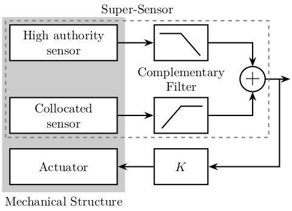
7.2 Sensor Fusion with complementary filters
\begin{tikzpicture} \node[addb={+}{}{}{}{-}] (addfb) at (0, 0){}; \node[block, right=0.75 of addfb] (K){$K$}; \node[block, right=1.5 of K] (G){$G^\prime$}; \node[addb={+}{}{}{}{}, right=0.75 of G] (adddy){}; \coordinate[] (KG) at ($0.5*(K.east)+0.5*(G.west)$); \node[block, below=0.75 of KG] (Gm){$G$}; \node[block, below=0.75 of Gm] (Hh){$H_H$}; \node[addb={+}{}{}{}{}, below=0.75 of Hh] (addsf){}; \node[block] (Hl) at (addsf-|G) {$H_L$}; \node[addb={+}{}{}{}{}, right=1.5 of Hl] (addn) {}; \draw[->] (addfb.east) -- (K.west) node[above left]{}; \draw[->] (K.east) -- (G.west) node[above left]{$u$}; \draw[->] (KG) node[branch]{} -- (Gm.north); \draw[->] (Gm.south) -- (Hh.north); \draw[->] (Hh.south) -- (addsf.north) node[above left]{}; \draw[->] (Hl.west) -- (addsf.east); \draw[->] (addsf.west) -| (addfb.south) node[below right]{}; \draw[->] (G.east) -- (adddy.west); \draw[<-] (addn.east) -- ++(0.75, 0) coordinate[](endpos) node[above left]{$n$}; \draw[->] (adddy.east) -- (G-|endpos) node[above left]{$y$}; \draw[->] (adddy-|addn) node[branch]{} -- (addn.north); \draw[<-] (addfb.west) -- ++(-0.75, 0) node[above right]{$r$}; \draw[->] (addn.west) -- (Hl.east) node[above right]{$y_m$}; \draw[<-] (adddy.north) -- ++(0, 0.75) node[below right]{$d_y$}; \end{tikzpicture}
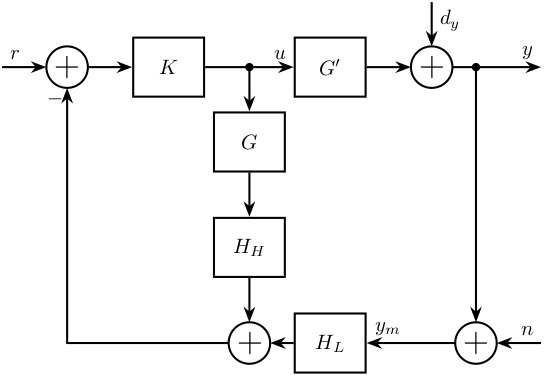
7.3 General Sensor Fusion with real sensors
\begin{tikzpicture} \node[addb={+}{}{}{}{-}] (addfb) at (0, 0){}; \node[block, right=1 of addfb] (K){$K$}; \node[addb={+}{}{}{}{}, right=1 of K] (adddu){}; \node[block, right=1 of adddu] (G){$G$}; \node[block, below=0.5 of G] (Gc){$G_c$}; \node[addb={+}{}{}{}{}, right=0.5 of G] (adddy){}; \node[addb={+}{}{}{}{}, right=1.3 of Gc] (adddyc){}; \node[block, below=1 of Gc] (Hl){$H_L$}; \node[block, below=0.5 of Hl] (Hh){$H_H$}; \node[addb={+}{}{}{}{}] (addsf) at (Hl-|addfb) {}; \node[addb={+}{}{}{}{}, right=2 of Hl] (addn) {}; \node[addb={+}{}{}{}{}] (addnc) at ($(Hh-|addn)+(0.8, 0)$) {}; \draw[<-] (addfb.west) -- ++(-1, 0) node[above right]{$r$}; \draw[->] (addfb.east) -- (K.west) node[above left]{$\epsilon_{sf}$}; \draw[->] (K.east) -- (adddu.west); \draw[->] (adddu.east) -- (G.west) node[above left]{$u$}; \draw[->] ($(adddu.east)+(0.3, 0)$) node[branch]{} |- (Gc.west); \draw[<-top] (addn.east) -- ++(1.5, 0) coordinate[](endpos) node[above left]{$n$}; \draw[->] (G.east) -- (adddy.west); \draw[->] (Gc.east) -- (adddyc.west); \draw[->] (adddy.east) -- (G-|endpos) node[above left]{$y$}; \draw[->] (adddyc.east) -- (Gc-|endpos) node[above left]{$y_c$}; \draw[->] (Hl.west) -- (addsf.east); \draw[->] (Hh.west) -| (addsf.south); \draw[->] (addsf.north) -- (addfb.south) node[below right]{$y_{sf}$}; \draw[->top] (G-|addn) node[branch]{} -- (addn.north); \draw[->] (Gc-|addnc) node[branch]{} -- (addnc.north); \draw[->] (addn.west) -- (Hl); \draw[->] (addnc.west) -- (Hh); \draw[<-] (adddu.north) -- ++(0, 0.8) node[below right]{$d_u$}; \draw[<-] (adddy.north) -- ++(0, 0.8) node[below right]{$d_y$}; \draw[<-] (adddyc.north) -- ++(0, 0.8) node[below right]{$d_{yc}$}; \draw[<-] (addnc.east) -- (addnc-|endpos) node[above left]{$n_c$}; \end{tikzpicture}

7.4 Equivalent configuration
\begin{tikzpicture} \node[addb={+}{}{}{}{-}] (addfb) at (0, 0){}; \node[addb={+}{}{}{}{-}, right=0.75 of addfb] (addK){}; \node[block, right=0.75 of addK] (K){$K$}; \node[block, right=2 of K] (G){$G^\prime$}; \node[addb={+}{}{}{}{}, right=0.75 of G] (adddy){}; \node[block, below right=0.5 and -0.3 of K] (Gm){$G$}; \node[block, below left =0.5 and -0.3 of K] (Hh){$H_H$}; \node[block, below=2 of G] (Hl) {$H_L$}; \node[addb={+}{}{}{}{}, right=1.5 of Hl] (addn) {}; \draw[->] (addfb.east) -- (addK.west); \draw[->] (addK.east) -- (K.west); \draw[->] (K.east) -- (G.west) node[above left]{$u$}; \draw[->] (G.east) -- (adddy.west); \draw[->] ($(G.west)+(-0.75, 0)$) node[branch](sffb){} |- (Gm.east); \draw[->] (Gm.west) -- (Hh.east); \draw[->] (Hh.west) -| (addK.south); \draw[<-] (addn.east) -- ++(0.75, 0) coordinate[](endpos) node[above left]{$n$}; \draw[->] (adddy.east) -- (G-|endpos) node[above left]{$y$}; \draw[->] (adddy-|addn) node[branch]{} -- (addn.north); \draw[<-] (addfb.west) -- ++(-0.75, 0) node[above right]{$r$}; \draw[->] (addn.west) -- (Hl.east) node[above right]{$y_m$}; \draw[<-] (adddy.north) -- ++(0, 0.75) node[below right]{$d_y$}; \draw[->] (Hl.west) -| (addfb.south) node[below right]{}; \node[fit={(addK.west|-Hh.south) (K.north-|sffb)}, inner sep=10pt, draw, dashed, color=gray, label={$K_{\text{fb}}$}] (Kfb) {}; \end{tikzpicture}

7.5 Equivalent configuration - classical Feedback
\begin{tikzpicture} \node[addb={+}{}{}{}{-}] (addfb) at (0, 0){}; \node[block, right=0.75 of addfb] (K){$K_{\text{fb}}$}; \node[block, right=0.75 of K] (G){$G^\prime$}; \node[addb={+}{}{}{}{}, right=0.75 of G] (adddy){}; \node[addb={+}{}{}{}{}, below right=0.75 and 0.5 of adddy] (addn) {}; \node[block] (Hl) at (G|-addn) {$H_L$}; \draw[->] (addfb.east) -- (K.west) node[above left]{}; \draw[->] (K.east) -- (G.west) node[above left]{$u$}; \draw[->] (G.east) -- (adddy.west); \draw[<-] (addn.east) -- ++(0.75, 0) coordinate[](endpos) node[above left]{$n$}; \draw[->] (G-|addn)node[branch]{} -- (addn.north); \draw[->] (adddy.east) -- (G-|endpos) node[above left]{$y$}; \draw[<-] (addfb.west) -- ++(-0.75, 0) node[above right]{$r$}; \draw[->] (addn.west) -- (Hl.east); \draw[->] (Hl.west) -| (addfb.south); \draw[<-] (adddy.north) -- ++(0, 0.75) node[below right]{$d_y$}; \end{tikzpicture}

7.6 Equivalent configuration - classical Feedback with pre-filter
\begin{tikzpicture} \node[addb={+}{}{}{}{-}] (addfb) at (0, 0){}; \node[block={1cm}{0.9cm}, left=0.5 of addfb] (Kr){$K_r$}; \node[block={1cm}{0.9cm}, right=0.5 of addfb] (K){$K_{\text{fb}}$}; \node[block={1cm}{0.9cm}, right=0.5 of K] (G){$G^\prime$}; \node[addb={+}{}{}{}{}, right=0.5 of G] (adddy){}; \node[addb={+}{}{}{}{}, below right=0.7 and 0.3 of adddy] (addn) {}; \node[block={1cm}{0.9cm}, left=0.5 of addn] (Hl) {$H_L$}; \draw[->] (addfb.east) -- (K.west) node[above left]{}; \draw[->] (K.east) -- (G.west) node[above left]{$u$}; \draw[->] (G.east) -- (adddy.west); \draw[<-] (addn.east) -- ++(0.5, 0) coordinate[](endpos) node[above left]{$n$}; \draw[->] (G-|addn)node[branch]{} -- (addn.north); \draw[->] (adddy.east) -- (G-|endpos) node[above left]{$y$}; \draw[<-] (Kr.west) -- ++(-0.5, 0) node[above right]{$r$}; \draw[->] (Kr.east) -- (addfb.west); \draw[->] (addn.west) -- (Hl.east); \draw[->] (Hl.west) -| (addfb.south); \draw[<-] (adddy.north) -- ++(0, 0.5) node[below right]{$d_y$}; \end{tikzpicture}
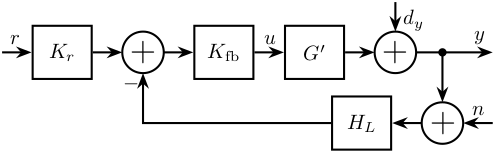
7.7 H-Infinity - Complementary filters - Generalized plant
\begin{tikzpicture} \node[block={6.0cm}{5.0cm}, dashed] (P) {}; \coordinate[] (inputw) at ($(P.south west)!0.75!(P.north west)$); \coordinate[] (inputu) at ($(P.south west)!0.25!(P.north west)$); \coordinate[] (outputl) at ($(P.south east)!0.8!(P.north east)$); \coordinate[] (outputh) at ($(P.south east)!0.5!(P.north east)$); \coordinate[] (outputv) at ($(P.south east)!0.2!(P.north east)$); \node[block, left=0.5 of outputl] (WL){$w_L$}; \node[block, left=0.5 of outputh] (WH){$w_H$}; \node[addb={+}{}{}{}{-}, left=1 of WH] (sub) {}; \draw[->] ($(inputw) + (-1.0, 0)$)coordinate(in) node[above right]{$w$} -- ++(1.5, 0)coordinate(branch) |- (outputv) -- ++(1, 0) node[above left]{$v$}; \draw[->] (branch|-sub)node[branch]{} -- (sub.west); \draw[->] (inputu-|in) node[above right]{$u$} -- ++(2.5, 0)coordinate(branch) |- (WL.west); \draw[->] (branch)node[branch]{} -| (sub.south); \draw[->] (sub.east) -- (WH.west); \draw[->] (WH.east) -- ++(1.5, 0)node[above left]{$z_H$}; \draw[->] (WL.east) -- ++(1.5, 0)node[above left]{$z_L$}; \end{tikzpicture}
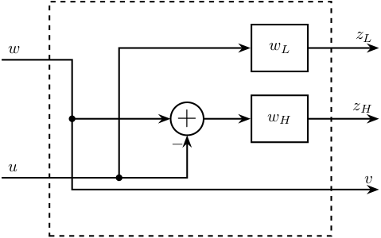
7.8 H-Infinity - Complementary filters - Generalized plant - bis
\begin{tikzpicture} \node[block={5.0cm}{4.0cm}, dashed] (P) {}; \coordinate[] (inputw) at ($(P.south west)!0.8!(P.north west) + (-1, 0)$); \coordinate[] (inputu) at ($(P.south west)!0.4!(P.north west) + (-1, 0)$); \coordinate[] (outputh) at ($(P.south east)!0.8!(P.north east) + ( 1, 0)$); \coordinate[] (outputl) at ($(P.south east)!0.4!(P.north east) + ( 1, 0)$); \coordinate[] (outputv) at ($(P.south east)!0.1!(P.north east) + ( 1, 0)$); \node[block, left=1.5 of outputl] (WL){$w_L$}; \node[block, left=1.5 of outputh] (WH){$w_H$}; \node[addb={+}{}{}{}{-}, left=1 of WH] (sub) {}; \draw[->] (inputw) node[above right]{$w$} -- (sub.west); \draw[->] (inputu) node[above right]{$u$} -- (WL.west); \draw[->] (inputu-|sub) node[branch]{} -- (sub.south); \draw[->] (sub.east) -- (WH.west); \draw[->] ($(inputw)+(1.5, 0)$) node[branch]{} |- (outputv) node[above left]{$v$}; \draw[->] (WH.east) -- (outputh)node[above left]{$z_H$}; \draw[->] (WL.east) -- (outputl)node[above left]{$z_L$}; \end{tikzpicture}
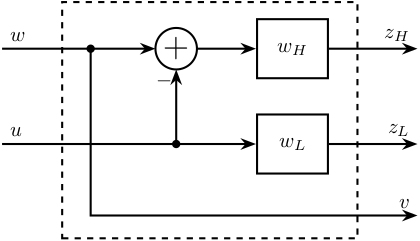
7.9 H-Infinity - Complementary filters
\begin{tikzpicture} \node[block={6.0cm}{5.0cm}, dashed] (P) {}; \coordinate[] (inputw) at ($(P.south west)!0.75!(P.north west)$); \coordinate[] (inputu) at ($(P.south west)!0.25!(P.north west)$); \coordinate[] (outputl) at ($(P.south east)!0.8!(P.north east)$); \coordinate[] (outputh) at ($(P.south east)!0.5!(P.north east)$); \coordinate[] (outputv) at ($(P.south east)!0.2!(P.north east)$); \node[block, left=0.5 of outputl] (WL){$W_L$}; \node[block, left=0.5 of outputh] (WH){$W_H$}; \node[addb={+}{}{}{}{-}, left=1 of WH] (sub) {}; \node[block, below=0.5 of P] (HL) {$H_L$}; \coordinate[] (in) at ($(inputw) + (-0.5, 0)$); \draw[->] ($(inputw) + (-1.0, 0)$) node[above right]{$w$} -- ++(1.5, 0)coordinate(branch) |- (outputv) -- ++(0.5, 0) |- (HL.east); \draw[->] (branch|-sub)node[branch]{} -- (sub.west); \draw[->top] (HL.west) -| (inputu-|in) -- ++(1.5, 0)coordinate(branch) |- (WL.west); \draw[->] (branch)node[branch]{} -| (sub.south); \draw[->] (sub.east) -- (WH.west); \draw[->] (WH.east) -- ++(1.5, 0)node[above left]{$z_H$}; \draw[->] (WL.east) -- ++(1.5, 0)node[above left]{$z_L$}; \end{tikzpicture}

7.10 H-Infinity - Complementary filters - bis
\begin{tikzpicture} \node[block={5.0cm}{4.0cm}, dashed] (P) {}; \coordinate[] (inputw) at ($(P.south west)!0.8!(P.north west) + (-1, 0)$); \coordinate[] (inputu) at ($(P.south west)!0.4!(P.north west) + (-1, 0)$); \coordinate[] (outputh) at ($(P.south east)!0.8!(P.north east) + ( 1, 0)$); \coordinate[] (outputl) at ($(P.south east)!0.4!(P.north east) + ( 1, 0)$); \coordinate[] (outputv) at ($(P.south east)!0.1!(P.north east) + ( 1, 0)$); \node[block, left=1.5 of outputl] (WL){$w_L$}; \node[block, left=1.5 of outputh] (WH){$w_H$}; \node[addb={+}{}{}{}{-}, left=1 of WH] (sub) {}; \node[block, below=0.5 of P] (HL) {$H_L$}; \draw[->] (inputw) node[above right]{$w$} -- (sub.west); \draw[->] (HL.west) -| ($(inputu)+(0.5, 0)$) -- (WL.west); \draw[->] (inputu-|sub) node[branch]{} -- (sub.south); \draw[->] (sub.east) -- (WH.west); \draw[->] ($(inputw)+(1.5, 0)$) node[branch]{} |- ($(outputv)+(-0.5, 0)$) |- (HL.east); \draw[->] (WH.east) -- (outputh)node[above left]{$z_H$}; \draw[->] (WL.east) -- (outputl)node[above left]{$z_L$}; \end{tikzpicture}
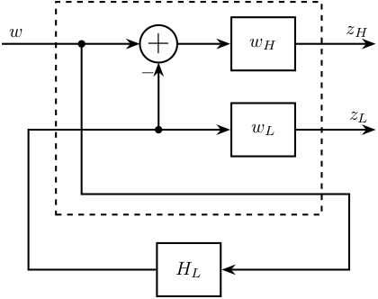
8 Rotating Frame
8.1 Control Diagram for fixed measurement
\begin{tikzpicture} % Blocs \node[addb={+}{}{}{}{-}] (subr) at (0, 0) {}; \node[block, right=0.8 of subr] (J) {$J(\theta)$}; \node[block, right=1 of J] (K) {$K$}; \node[block, right=1 of K] (G) {$G(\theta)$}; % Connections and labels \draw[<-] (subr.west) node[above left]{$r_x$} -- ++(-1, 0); \draw[->] (subr.east) -- (J.west) node[above left]{$\epsilon_x$}; \draw[->] (J.east) -- (K.west) node[above left]{$\epsilon_d$}; \draw[->] (K.east) -- (G.west) node[above left]{$F$}; \draw[->] (G.east) node[above right]{$D_x$} -| ($(G.east)+(1, -1)$) -| (subr.south); \end{tikzpicture}

8.2 Control Diagram for fixed measurement - 2DoF
\begin{tikzpicture} % Blocs \node[addb={+}{}{}{}{-}] (subr) at (0, 0) {}; \node[block, right=1 of subr] (J) {$J(\theta)$}; \node[block, right=1 of J] (K) {$K$}; \node[block, right=1 of K] (G) {$G(\theta)$}; % Connections and labels \draw[<-] (subr.west) node[above left]{$\begin{bmatrix}r_x\\r_y\end{bmatrix}$} -- ++(-1, 0); \draw[->] (subr.east) -- (J.west) node[above left]{$\begin{bmatrix}\epsilon_x\\\epsilon_y\end{bmatrix}$}; \draw[->] (J.east) -- (K.west) node[above left]{$\begin{bmatrix}\epsilon_u\\\epsilon_v\end{bmatrix}$}; \draw[->] (K.east) -- (G.west) node[above left]{$\begin{bmatrix}F_u\\F_v\end{bmatrix}$}; \draw[->] (G.east) node[above right]{$\begin{bmatrix}D_x\\D_y\end{bmatrix}$} -| ($(G.east)+(1, -1)$) -| (subr.south); \end{tikzpicture}
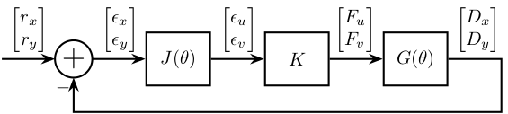
8.3 Control diagram for rotating measurement
\begin{tikzpicture} % Blocs \node[block] (J) at (0, 0) {$J(\theta)$}; \node[addb={+}{}{}{}{-}, right=0.8 of J] (subr) {}; \node[block, right=0.8 of subr] (K) {$K$}; \node[block, right=1 of K] (G) {$G$}; % Connections and labels \draw[<-] (J.west)node[above left]{$r_x$} -- ++(-1, 0); \draw[->] (J.east) -- (subr.west) node[above left]{$r_d$}; \draw[->] (subr.east) -- (K.west) node[above left]{$\epsilon_d$}; \draw[->] (K.east) -- (G.west) node[above left]{$F$}; \draw[->] (G.east) node[above right]{$D_x$} -| ($(G.east)+(1, -1)$) -| (subr.south); \end{tikzpicture}

8.4 Control diagram for rotating measurement - 2DoF
\begin{tikzpicture} % Blocs \node[block] (J) at (0, 0) {$J(\theta)$}; \node[addb={+}{}{}{}{-}, right=1 of J] (subr) {}; \node[block, right=0.8 of subr] (K) {$K$}; \node[block, right=1 of K] (G) {$G$}; % Connections and labels \draw[<-] (J.west)node[above left]{$\begin{bmatrix}r_x\\r_y\end{bmatrix}$} -- ++(-1, 0); \draw[->] (J.east) -- (subr.west) node[above left]{$\begin{bmatrix}r_u\\r_v\end{bmatrix}$}; \draw[->] (subr.east) -- (K.west) node[above left]{$\begin{bmatrix}\epsilon_u\\\epsilon_v\end{bmatrix}$}; \draw[->] (K.east) -- (G.west) node[above left]{$\begin{bmatrix}F_u\\F_v\end{bmatrix}$}; \draw[->] (G.east) node[above right]{$\begin{bmatrix}D_u\\D_v\end{bmatrix}$} -| ($(G.east)+(1, -1)$) -| (subr.south); \end{tikzpicture}
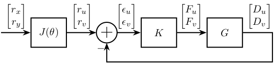
8.5 Rotating Frame - 1DoF
\begin{tikzpicture} % ================ % Parameters % ================ % Sizes \def\lengthi{5} % Size of unit vectors \def\lengthd{3} % Length of d \def\rotsize{4} % Size of the rotational stage \def\thetasize{4.5} % Size of the theta indicator \def\stagesize{0.3} % Size of the place for actuator and spring % Angles \def\thetau{25} % Current angle Theta \def\thetav{\thetau+90} % Current angle Theta+90 % ================ % Rotational Stage \draw[] (-10:\rotsize) arc (-10:125:\rotsize); \path[fill=black!20!white] (-10:\rotsize) arc (-10:125:\rotsize) |- cycle; % % Guidance % \draw[dashed, thin] (\thetau+1:\rotsize) -- ++(\thetau:-0.8*\rotsize); % \draw[dashed, thin] (\thetau-1:\rotsize) -- ++(\thetau:-0.8*\rotsize); % Inertial Frame \draw[->] (0, 0) -- (\lengthi, 0) node[below]{$\vec{i}_x$}; \draw[->] (0, 0) -- (0, \lengthi) node[left]{$\vec{i}_y$}; % Angle of rotation \draw[] (\thetasize, 0) arc (0:\thetau:\thetasize) node[midway, right]{$\theta$}; % Rotating Scope \begin{scope}[rotate=\thetau] % Guidance \draw[fill=white, thin] (0.1*\rotsize,-0.1) rectangle (0.9*\rotsize, 0.1); % Rotating Frame \draw[->, dashed] (0, 0) -- (\lengthi, 0) node[below]{$\vec{i}_u$}; \draw[->, dashed] (0, 0) -- (0, \lengthi) node[left]{$\vec{i}_v$}; % Mass \coordinate[] (mass) at (\lengthd, 0); \draw[fill=black] (mass) circle (0.08); \node[below right=0.05 and 0.05 of mass] {$m$}; % Spring and Actuator \draw[] (0, \stagesize) coordinate(act_start) -- (0, -\stagesize) coordinate(spring_start); \begin{scope}[shift={(mass)}] \draw[] (0, \stagesize) coordinate(act_end) -- (0, -\stagesize) coordinate(spring_end); \end{scope} \draw[actuator={1.6}{0.3}] (act_start) -- node[above=0.3]{$F$} (act_end); \draw[spring=0.7] (spring_start) -- node[below]{$k$} (spring_end); % Coordinates \draw[<->, dashed] (0, -2*\stagesize) coordinate(act_start) -- node[below]{$d$} (\lengthd, -2*\stagesize); \end{scope} % x-y position \coordinate[] (origin) at (0, 0); \draw[dashed, thin] (mass) -- (mass |- origin) node[below]{$x$}; \draw[dashed, thin] (mass) -- (mass -| origin) node[left]{$y$}; % Torque \draw[->] (-0.5, 0) arc (180:270:0.5) node[near start, left]{$\vec{M}$}; \end{tikzpicture}

8.6 Rotating Frame - 2DoF
\begin{tikzpicture} % ================ % Parameters % ================ % Sizes \def\lengthi{5} % Size of unit vectors \def\lengthd{3} % Length of d \def\rotsize{4} % Size of the rotational stage \def\thetasize{4.5} % Size of the theta indicator \def\stagesize{0.3} % Size of the place for actuator and spring % Angles \def\thetau{25} % Current angle Theta \def\thetav{\thetau+90} % Current angle Theta+90 % ================ % Rotational Stage \draw[] (-10:\rotsize) arc (-10:125:\rotsize); \path[fill=black!20!white] (-10:\rotsize) arc (-10:125:\rotsize) |- cycle; % Inertial Frame \draw[->] (0, 0) -- (\lengthi, 0) node[below]{$\vec{i}_x$}; \draw[->] (0, 0) -- (0, \lengthi) node[left]{$\vec{i}_y$}; % Angle of rotation \draw[] (\thetasize, 0) arc (0:\thetau:\thetasize) node[midway, right]{$\theta$}; below % Rotating Scope \begin{scope}[rotate=\thetau] % Guidance \draw[fill=white, thin] (0.1*\rotsize, -0.1) rectangle (0.9*\rotsize, 0.1); \draw[fill=white, thin] (-0.1, 0.1*\rotsize) rectangle (0.1, 0.9*\rotsize); % Rotating Frame \draw[->, dashed] (0, 0) -- (\lengthi, 0) node[below]{$\vec{i}_u$}; \draw[->, dashed] (0, 0) -- (0, \lengthi) node[left]{$\vec{i}_v$}; % Mass \coordinate[] (mass) at (0.8*\lengthd, 0.6*\lengthd); \node[] at (mass){$\bullet$}; \node[above right=0 and 0 of mass] {$m$}; \draw[] (mass) -- ($(mass)+( 0, -0.5)$); \draw[] (mass) -- ($(mass)+(-0.5, 0)$); \draw[] ($(mass)+(-0.3, -0.5)$)coordinate(actv) -- ($(mass)+( 0.3, -0.5)$)coordinate(stiffv); \draw[] ($(mass)+(-0.5, 0.3)$)coordinate(actu) -- ($(mass)+(-0.5, -0.3)$)coordinate(stiffu); % \node[draw, minimum width=1cm, minimum height=1cm, transform shape] (massb) at (mass){}; % Spring and Actuator for U \draw[actuator={0.6}{0.2}] (actu) -- node[above left]{$F_u$} (actu-|0,0); \draw[spring=0.2] (stiffu) -- node[below right]{$k_u$} (stiffu-|0,0); % Spring and Actuator for V \draw[actuator={0.6}{0.2}] (actv) -- node[left]{$F_v$} (actv|-0,0); \draw[spring=0.2] (stiffv) -- node[right]{$k_v$} (stiffv|-0,0); \end{scope} % x-y position % \coordinate[] (origin) at (0, 0); % \draw[dashed, thin] (mass) -- (mass |- origin) node[below]{$x$}; % \draw[dashed, thin] (mass) -- (mass -| origin) node[left]{$y$}; % Torque \draw[->] (-0.5, 0) arc (180:270:0.5) node[near start, left]{$\vec{M}$}; \end{tikzpicture}
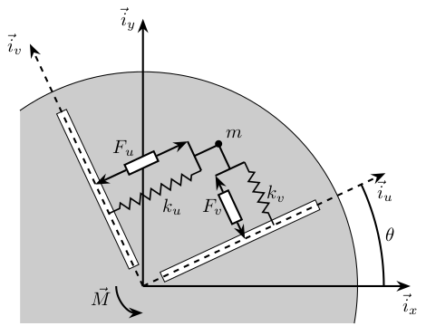
8.7 SISO Controller
\begin{tikzpicture} % Blocs \node[addb={+}{}{}{}{-}] (subr) at (0, 0) {}; \node[block, right=1 of subr] (K) {$K_u$}; \node[block, right=1 of K] (G) {$G_u$}; % Connections and labels \draw[<-] (subr.west) node[above left]{$r_u$} -- ++(-1, 0); \draw[->] (subr.east) -- (K.west) node[above left]{$\epsilon_u$}; \draw[->] (K.east) -- (G.west) node[above left]{$F_u$}; \draw[->] (G.east) node[above right]{$D_u$} -| ($(G.east)+(1, -1)$) -| (subr.south); \end{tikzpicture}

8.8 Diagonal Controller
\begin{tikzpicture} % Blocs \node[addb={+}{}{}{}{-}] (subr) at (0, 0) {}; \node[block, right=1 of subr] (K) {$\begin{bmatrix}K_u & 0 \\ 0 & K_v\end{bmatrix}$}; \node[block, right=1 of K] (G) {$G$}; % Connections and labels \draw[<-] (subr.west) node[above left]{$\begin{bmatrix}r_u\\r_v\end{bmatrix}$} -- ++(-1, 0); \draw[->] (subr.east) -- (K.west) node[above left]{$\begin{bmatrix}\epsilon_u\\\epsilon_v\end{bmatrix}$}; \draw[->] (K.east) -- (G.west) node[above left]{$\begin{bmatrix}F_u\\F_v\end{bmatrix}$}; \draw[->] (G.east) node[above right]{$\begin{bmatrix}D_u\\D_v\end{bmatrix}$} -| ($(G.east)+(1, -1)$) -| (subr.south); \end{tikzpicture}

9 Mass-Spring Systems
9.1 One mass
\begin{tikzpicture} % ==================== % Parameters % ==================== \def\massw{2.2} % Width of the masses \def\massh{0.8} % Height of the masses \def\spaceh{1.2} % Height of the springs/dampers \def\dispw{0.3} % Width of the dashed line for the displacement \def\disph{0.5} % Height of the arrow for the displacements \def\bracs{0.05} % Brace spacing vertically \def\brach{-10pt} % Brace shift horizontaly % ==================== % ==================== % Ground % ==================== \draw (-0.5*\massw, 0) -- (0.5*\massw, 0); \draw[dashed] (0.5*\massw, 0) -- ++(\dispw, 0); \draw[->] (0.5*\massw+0.5*\dispw, 0) -- ++(0, \disph) node[right]{$w$}; % ==================== \begin{scope}[shift={(0, 0)}] % Mass \draw[fill=white] (-0.5*\massw, \spaceh) rectangle (0.5*\massw, \spaceh+\massh) node[pos=0.5]{$m$}; % Spring, Damper, and Actuator \draw[spring] (-0.4*\massw, 0) -- (-0.4*\massw, \spaceh) node[midway, left=0.1]{$k$}; \draw[damper] (0, 0) -- ( 0, \spaceh) node[midway, left=0.2]{$c$}; \draw[actuator] ( 0.4*\massw, 0) -- ( 0.4*\massw, \spaceh) node[midway, left=0.1](F){$F$}; % Displacements \draw[dashed] (0.5*\massw, \spaceh) -- ++(\dispw, 0); \draw[->] (0.5*\massw+0.5*\dispw, \spaceh) -- ++(0, \disph) node[right]{$x$}; % Legend % \draw[decorate, decoration={brace, amplitude=8pt}, xshift=\brach] % % (-0.5*\massw, \bracs) -- (-0.5*\massw, \spaceh+\massh-\bracs) % % node[midway,rotate=90,anchor=south,yshift=10pt]{}; \end{scope} \end{tikzpicture}

9.2 One mass - Control
\begin{tikzpicture} % ==================== % Parameters % ==================== \def\massw{3} % Width of the masses \def\massh{1} % Height of the masses \def\spaceh{2} % Height of the springs/dampers \def\dispw{0.3} % Width of the dashed line for the displacement \def\disph{0.5} % Height of the arrow for the displacements \def\bracs{0.05} % Brace spacing vertically \def\brach{-10pt} % Brace shift horizontaly % ==================== % ==================== % Ground % ==================== \draw (-0.5*\massw, 0) -- (0.5*\massw, 0); \draw[dashed] (0.5*\massw, 0) -- ++(\dispw, 0); \draw[->] (0.5*\massw+0.5*\dispw, 0) -- ++(0, \disph) node[right]{$w$}; % ==================== \begin{scope}[shift={(0, 0)}] % Mass \draw[fill=white] (-0.5*\massw, \spaceh) rectangle (0.5*\massw, \spaceh+\massh) node[pos=0.5]{$m$}; % Spring, Damper, and Actuator \draw[spring] (-0.4*\massw, 0) -- (-0.4*\massw, \spaceh) node[midway, left=0.1]{$k$}; \draw[damper] (0, 0) -- ( 0, \spaceh) node[midway, left=0.2]{$c$}; \draw[actuator={0.8}{0.3}] ( 0.4*\massw, 0) -- ( 0.4*\massw, \spaceh) coordinate[midway, right=0.15](F); % Displacements \draw[dashed] (0.5*\massw, \spaceh) -- ++(\dispw, 0); \draw[->] (0.5*\massw+0.5*\dispw, \spaceh) -- ++(0, \disph) node[right](x){$x$}; \end{scope} \node[block, right=1 of F] (Kfb) {$K_{\text{fb}}$}; \node[addb={+}{}{-}{}{}, right=1.8 of Kfb] (add) {}; \node[addb] (addn) at (x-|Kfb) {}; \node[block, right=0.75 of addn] (Hl) {$H_L$}; \draw[->] (x) -- (addn.west); \draw[->] (addn.east) -- (Hl.west); \draw[->] (Hl.east) -| (add.north); \draw[->] (add.west) -- (Kfb.east); \draw[->] (Kfb.west) -- (F) node[above right]{$F$}; \draw[<-] (addn.north) -- ++(0,0.75) node[below right]{$n$}; \draw[<-] (add.east) -- ++(0.75,0) node[above left]{$r$}; \end{tikzpicture}

9.3 Two masses
\begin{tikzpicture} % ==================== % Parameters % ==================== \def\massw{2.2} % Width of the masses \def\massh{0.8} % Height of the masses \def\spaceh{1.2} % Height of the springs/dampers \def\dispw{0.3} % Width of the dashed line for the displacement \def\disph{0.5} % Height of the arrow for the displacements \def\bracs{0.05} % Brace spacing vertically \def\brach{-10pt} % Brace shift horizontaly % ==================== % ==================== % Ground % ==================== \draw (-0.5*\massw, 0) -- (0.5*\massw, 0); \draw[dashed] (0.5*\massw, 0) -- ++(\dispw, 0); \draw[->] (0.5*\massw+0.5*\dispw, 0) -- ++(0, \disph) node[right]{$x_{w}$}; % ==================== \begin{scope}[shift={(0, 0)}] % Mass \draw[fill=white] (-0.5*\massw, \spaceh) rectangle (0.5*\massw, \spaceh+\massh) node[pos=0.5]{$m_{g}$}; % Spring, Damper, and Actuator \draw[spring] (-0.4*\massw, 0) -- (-0.4*\massw, \spaceh) node[midway, left=0.1]{$k_{g}$}; \draw[damper] (0, 0) -- ( 0, \spaceh) node[midway, left=0.2]{$c_{g}$}; \draw[actuator] ( 0.4*\massw, 0) -- ( 0.4*\massw, \spaceh) node[midway, left=0.1](F){$F_{g}$}; % Displacements \draw[dashed] (0.5*\massw, \spaceh) -- ++(\dispw, 0); \draw[->] (0.5*\massw+0.5*\dispw, \spaceh) -- ++(0, \disph) node[right]{$x_{g}$}; % Legend % \draw[decorate, decoration={brace, amplitude=8pt}, xshift=\brach] % % (-0.5*\massw, \bracs) -- (-0.5*\massw, \spaceh+\massh-\bracs) % % node[midway,rotate=90,anchor=south,yshift=10pt]{}; \end{scope} \begin{scope}[shift={(0, \spaceh+\massh)}] % Mass \draw[fill=white] (-0.5*\massw, \spaceh) rectangle (0.5*\massw, \spaceh+\massh) node[pos=0.5]{$m_{s}$}; % Spring, Damper, and Actuator \draw[spring] (-0.4*\massw, 0) -- (-0.4*\massw, \spaceh) node[midway, left=0.1]{$k_{s}$}; \draw[damper] (0, 0) -- ( 0, \spaceh) node[midway, left=0.2]{$c_{s}$}; % Displacements \draw[dashed] (0.5*\massw, \spaceh) -- ++(\dispw, 0); \draw[->] (0.5*\massw+0.5*\dispw, \spaceh) -- ++(0, \disph) node[right]{$x_{s}$}; % Legend % \draw[decorate, decoration={brace, amplitude=8pt}, xshift=\brach] % % (-0.5*\massw, \bracs) -- (-0.5*\massw, \spaceh+\massh-\bracs) % % node[midway,rotate=90,anchor=south,yshift=10pt]{}; \end{scope} \end{tikzpicture}

9.4 Three masses
\begin{tikzpicture} % ==================== % Parameters % ==================== \def\massw{2.2} % Width of the masses \def\massh{0.8} % Height of the masses \def\spaceh{1.2} % Height of the springs/dampers \def\dispw{0.3} % Width of the dashed line for the displacement \def\disph{0.5} % Height of the arrow for the displacements \def\bracs{0.05} % Brace spacing vertically \def\brach{-10pt} % Brace shift horizontaly % ==================== % ==================== % Ground % ==================== \draw (-0.5*\massw, 0) -- (0.5*\massw, 0); \draw[dashed] (0.5*\massw, 0) -- ++(\dispw, 0); \draw[->] (0.5*\massw+0.5*\dispw, 0) -- ++(0, \disph) node[right]{$x_{w}$}; % ==================== % Granite \begin{scope}[shift={(0, 0)}] % Mass \draw[fill=white] (-0.5*\massw, \spaceh) rectangle (0.5*\massw, \spaceh+\massh) node[pos=0.5]{$m_{g}$}; % Spring, Damper, and Actuator \draw[spring] (-0.4*\massw, 0) -- (-0.4*\massw, \spaceh) node[midway, left=0.1]{$k_{g}$}; \draw[damper] (0, 0) -- ( 0, \spaceh) node[midway, left=0.2]{$c_{g}$}; \draw[actuator] ( 0.4*\massw, 0) -- ( 0.4*\massw, \spaceh) node[midway, left=0.1](F){$F_{g}$}; % Displacements \draw[dashed] (0.5*\massw, \spaceh) -- ++(\dispw, 0); \draw[->] (0.5*\massw+0.5*\dispw, \spaceh) -- ++(0, \disph) node[right]{$x_{g}$}; % Legend % \draw[decorate, decoration={brace, amplitude=8pt}, xshift=\brach] % % (-0.5*\massw, \bracs) -- (-0.5*\massw, \spaceh+\massh-\bracs) % % node[midway,rotate=90,anchor=south,yshift=10pt]{Support}; \end{scope} % Stages \begin{scope}[shift={(0, \spaceh+\massh)}] % Mass \draw[fill=white] (-0.5*\massw, \spaceh) rectangle (0.5*\massw, \spaceh+\massh) node[pos=0.5]{$m_{s}$}; % Spring, Damper, and Actuator \draw[spring] (-0.4*\massw, 0) -- (-0.4*\massw, \spaceh) node[midway, left=0.1]{$k_{s}$}; \draw[damper] (0, 0) -- ( 0, \spaceh) node[midway, left=0.2]{$c_{s}$}; % Displacements \draw[dashed] (0.5*\massw, \spaceh) -- ++(\dispw, 0); \draw[->] (0.5*\massw+0.5*\dispw, \spaceh) -- ++(0, \disph) node[right]{$x_{s}$}; % Legend % \draw[decorate, decoration={brace, amplitude=8pt}, xshift=\brach] % % (-0.5*\massw, \bracs) -- (-0.5*\massw, \spaceh+\massh-\bracs) % % node[midway,rotate=90,anchor=south,yshift=10pt]{Actuator}; \end{scope} % Hexapod \begin{scope}[shift={(0, 2*(\spaceh+\massh))}] % Mass \draw[fill=white] (-0.5*\massw, \spaceh) rectangle (0.5*\massw, \spaceh+\massh) node[pos=0.5]{$m_{v}$}; % Spring, Damper, and Actuator \draw[spring] (-0.4*\massw, 0) -- (-0.4*\massw, \spaceh) node[midway, left=0.1]{$k_{v}$}; \draw[damper] (0, 0) -- ( 0, \spaceh) node[midway, left=0.2]{$c_{v}$}; % Displacements \draw[dashed] (0.5*\massw, \spaceh) -- ++(\dispw, 0); \draw[->] (0.5*\massw+0.5*\dispw, \spaceh) -- ++(0, \disph) node[right]{$x_{v}$}; % Legend % \draw[decorate, decoration={brace, amplitude=8pt}, xshift=\brach] % % (-0.5*\massw, \bracs) -- (-0.5*\massw, \spaceh+\massh-\bracs) % % node[midway,rotate=90,anchor=south,yshift=10pt]{Flexibility}; \end{scope} \end{tikzpicture}

10 Mechanical Systems
10.1 Piezoelectric Actuator
\begin{tikzpicture} \node[piezo={2}{3}{10}] (piezo) at (0, 0){}; \node[draw, fill=white, anchor=south, minimum width=3cm, minimum height=1.5cm] (mass) at ($(piezo.north)+(0, 0.5)$) {Mass}; \draw[] ($(piezo.south)+(-1.5, -0.5)$) -- ++(3, 0); \draw ($0.8*(piezo.north west)+0.2*(piezo.north east)$) -- ++(0, 0.5); \draw ($0.2*(piezo.north west)+0.8*(piezo.north east)$) -- ++(0, 0.5); \draw ($0.8*(piezo.south west)+0.2*(piezo.south east)$) -- ++(0, -0.5); \draw ($0.2*(piezo.south west)+0.8*(piezo.south east)$) -- ++(0, -0.5); \end{tikzpicture}

11 Control Tradeoffs
11.1 Performance / Robustness
\begin{tikzpicture} % Scale \def\yscale{0.8} \def\xscale{1.0} % Colors \def\colorstart{blue} \def\colorend{red} % Axis \draw [->] (-0.5,0) -- (10*\xscale,0) node[below left]{Robustness}; \draw [->] (0,-0.5) -- (0,10*\yscale) node[below left, rotate=90, anchor=south east]{Performance}; % Color Bar \shade[draw, bottom color=\colorstart, top color=\colorend, fill opacity=0.5] (10*\xscale, 1*\yscale) rectangle (11*\xscale, 9*\yscale); \node[rotate=90, above] at (10*\xscale, 5*\yscale) {Required information on plant}; \node[above] at (10.5*\xscale, 1*\yscale) {little}; \node[below] at (10.5*\xscale, 9*\yscale) {large}; % =================================== % Classical Control % =================================== % Control Types \node[align=center] (pid) at (7.0*\xscale, 1.2*\yscale) {PID\\Lead-Lag}; \begin{scope}[on background layer] % Control Families \node[ellipse, draw, dashed, minimum width=3.0*\xscale cm, minimum height=2.0*\yscale cm, fill=\colorstart!90!\colorend, fill opacity=0.5, text opacity=1] (classicalcontrol) at (pid) {}; \end{scope} \node[above, align=center] at (classicalcontrol.north) {\textbf{Classical control} (1930)\\{\small SISO, Manual Method}}; % =================================== % =================================== % Modern Control % =================================== % Control Types \node[align=center] (lqg) at (2.0*\xscale, 7.5*\yscale) {LQR\\LQG}; \begin{scope}[on background layer] \node[ellipse, draw, dashed, minimum width=2.0*\xscale cm, minimum height=2.0*\yscale cm, fill=\colorstart!20!\colorend, fill opacity=0.5, text opacity=1] (moderncontrol) at (lqg) {}; \end{scope} \node[above, align=center] at (moderncontrol.north) {\textbf{Modern control} (1960)\\{\small MIMO, Optimal}}; % =================================== % =================================== % Robust Control % =================================== % Control Types \node[align=center] (hinf) at (4.5*\xscale, 4.8*\yscale) {$H_\infty$\\$H_2$}; \node[] (mu) at (5.5*\xscale, 4.8*\yscale) {$\mu$}; \begin{scope}[on background layer] \node[ellipse, draw, dashed, minimum width=3.0*\xscale cm, minimum height=2.5*\yscale cm, shade, left color=\colorstart!50!\colorend, right color=\colorstart!10!\colorend, fill opacity=0.5, text opacity=1] (robustcontrol) at ($0.5*(hinf)+0.5*(mu)$) {}; \end{scope} \node[above, align=center] at (robustcontrol.north) {\textbf{Robust control} (1990)\\{\small MIMO, Robust}}; % =================================== % =================================== % Sensor Fusion With Robust Control % =================================== \coordinate (sf) at (6.8*\xscale, 8.0*\yscale); \node[ellipse, draw, dashed, minimum width=1.0 cm, minimum height=1.0 cm, fill=\colorstart!75!\colorend, fill opacity=0.5, text opacity=1] (sfcontrol) at (sf) {$SF$ - $H_\infty$}; \node[above, align=center] at (sfcontrol.north) {\textbf{Optimal Sensor-Fusion}\\{\small MIMO, High performance, Robust}}; % =================================== \end{tikzpicture}
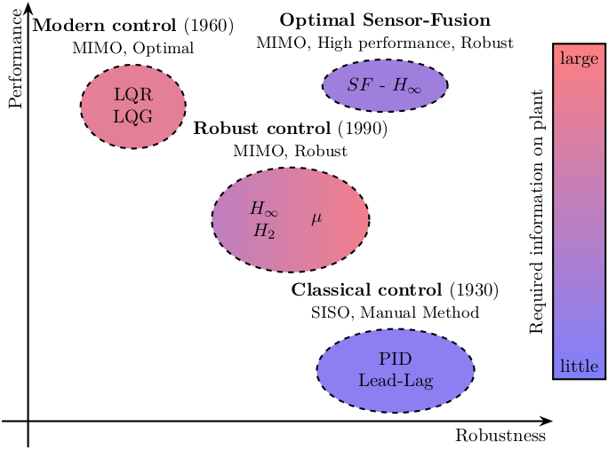
11.2 Performance / Knowledge
\begin{tikzpicture} % Scale \def\yscale{0.5} \def\xscale{0.8} % Axis \draw [->] (-0.5,0) -- (10*\xscale,0) node[below left]{Required Plant Knowledge}; \draw [->] (0,-0.5) -- (0,10*\yscale) node[below left, rotate=90, anchor=south east]{Robust Performance}; % Control Types \node[] (pid) at (2.0*\xscale, 1.5*\yscale) {PID}; \node[] (lqg) at (7.5*\xscale, 3.5*\yscale) {LQG}; \node[] (hinf) at (6.0*\xscale, 7.0*\yscale) {$H_\infty$}; \node[] (mu) at (8.0*\xscale, 7.0*\yscale) {$\mu$}; \node[] (hinsf) at (3.0*\xscale, 6.5*\yscale) {$H_\infty$-Sensor fusion}; \begin{scope}[on background layer] % Control Families \node[ellipse, draw, fill=white, dashed, minimum width=3.0*\xscale cm, minimum height=1.5*\yscale cm] (classicalcontrol) at (pid) {}; \node[ellipse, draw, fill=white, dashed, minimum width=2.0*\xscale cm, minimum height=2.0*\yscale cm] (moderncontrol) at (lqg) {}; \node[ellipse, draw, fill=white, dashed, minimum width=3.5*\xscale cm, minimum height=3.0*\yscale cm] (robustcontrol) at ($0.5*(hinf)+0.5*(mu)$) {}; \end{scope} % Control Families Names \node[above] at (classicalcontrol.north) {Classical control}; \node[above] at (moderncontrol.north) {Modern control}; \node[above] at (robustcontrol.north) {Robust control}; \end{tikzpicture}
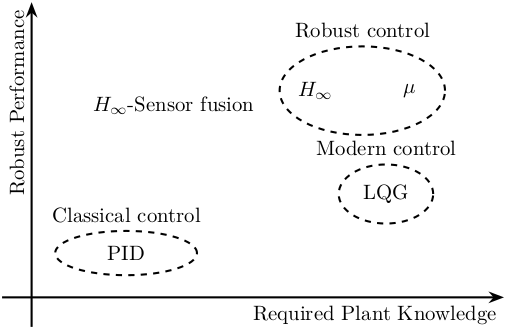
12 Pendulum Experiment
12.1 Side view
\begin{tikzpicture} % Colors \definecolor{mirror}{RGB}{178,178,178} % light grey % Pendulum \draw[fill=white] (0, 0) rectangle ++(0.5, 4); \coordinate[] (fixation) at (0.25, 4.25); \node[] at (fixation) {$\bullet$}; \draw[] (fixation) -- (0.5, 4); \draw[] (fixation) -- (0, 4); % Voice Coil \begin{scope}[shift={(0.5, 0)}] \voicecoil{1.5}{1.5}{-90}; \end{scope} % Corner Cube \draw[fill=mirror] (0, 0.25) rectangle (-0.75, 1.25); \draw[ultra thick] (-0.75, 0.4) -- (-0.75, 1.1); % Support \draw[fill=white] (-6.5, -1) rectangle (4, -0.5); % Interferometer \draw[fill=white] (-5.5, -0.5) rectangle ++(3, 2); % Voice coil fixation \draw[fill=white] (2, -0.5) rectangle ++(1, 2.5); % Coil Wires \draw[->-=.5] (vc_wire_one) node[]{$\bullet$} to[out=0,in=-180] ++(1.5, 0.2); \draw[-<-=.5] (vc_wire_two) node[]{$\bullet$} to[out=0,in=-180] node[midway, above]{$\hat{I}$} ++(1.5, 0.2); % LASER \draw[red, ->-=.6, -<-=.4] (-2.5, 0.75) -- (-0.75, 0.75); % F \draw[->] (vc_force) node[]{$\bullet$} -- ++(0.5, 0) node[right]{$\hat{F}$}; % D \draw[<->] (-2.5, 0) -- node[midway, above]{$\hat{d}$} (-0.75, 0); \draw[dashed] (-0.75, 0.25) -- (-0.75, -0.25); % x \draw[->] (-0.75, 1.5) -- ++(0.5, 0) node[above]{$\hat{x}$}; \draw[dashed] (-0.75, 1.25) -- (-0.75, 1.75); % Dm \coordinate[] (output_interferometer) at (-5, 0.75); \draw[->-=.6] (output_interferometer) node[]{$\bullet$} to[out=-180,in=0] node[pos=0.6, above]{$\hat{d}_m$} ++(-1.5, 0.2) ; % Xg \draw[->] (-6.5, -0.25) -- ++(0.5, 0) node[above]{$\hat{x}_g$}; \draw[dashed] (-6.5, -0.5) -- ++(0, 0.5); \end{tikzpicture}
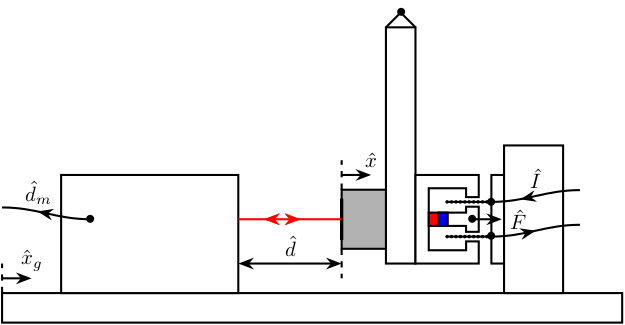
12.2 Top view
\begin{tikzpicture} % Parameters definitions \def\splitw{2} % Width of the split mirrors \def\splith{2} % Height of the split mirrors \def\photow{1} % Width of the photodiodes \def\photoh{3} % Height of the photodiodes \def\mirrorw{1} % Width of the mirrors \def\mirrorh{1.5} % Height of the mirrors \def\pendulumw{3} % Width of the pendulum \def\pendulumh{1} % Height of the pendulum \def\pendmirrw{1} % Width of the mirror on the pendulum \def\pendmirrh{1} % Height of the mirror on the pendulum \def\firstinter{3} % First intersection of the beam \def\secinter{6} % Second intersection of the beam \def\finalinter{9} % Intersection with the pendulum \def\magnetw{1.5} % Width of the magnet \def\magneth{1.0} % Height of the magnet \def\magnetwb{0.2} % Width of the borders of the magnet \def\magnethl{0.2} % Height of the low part of the magnet \def\magnetmw{0.3} % Width of the middle part of the magnet \def\magnetmh{0.2} % Height of the middle part of the magnet \def\magnethg{0.3} % Height of the gap of the magnet \def\magnetwg{0.7} % Width of the gap of the magnet % Colors \definecolor{split}{RGB}{162,255,255} % light blue \definecolor{photodiode}{RGB}{254,197,66} % light orange \definecolor{mirror}{RGB}{178,178,178} % light grey \begin{scope}[rotate=-90] % Label positions \pgfmathsetmacro{\labelright}{0.5*\splitw+\photow+0.5}% \pgfmathsetmacro{\labelleft}{-0.5*\splitw-\photow-0.5}% % Laser Source \begin{scope}[shift={(0, 0)}] \draw[fill=white] (-0.5, 0) rectangle node[pos=0.5]{Laser} (0.5, -1.5); \draw[] (-0.2, -1.5) to[out=-90,in=45] ++(-1, -1); \draw[] ( 0.2, -1.5) to[out=-90,in=45] ++(-1, -1); \end{scope} % Split Mirror 1 \begin{scope}[shift={(0, \firstinter)}] \draw[fill=split] (-0.5*\splitw, -0.5*\splith) rectangle (0.5*\splitw, 0.5*\splith); \draw[dashed] (0.5*\splitw, -0.5*\splith) -- (-0.5*\splitw, 0.5*\splith); \end{scope} % Photodiode 1 \begin{scope}[shift={(-0.5*\splitw, \firstinter)}] \draw[fill=photodiode] (-\photow, -0.5*\photoh) rectangle node[pos=0.5]{Photodiode} (0, 0.5*\photoh); \draw[] (-0.5*\photow, -0.5*\photoh+0.5*\photow) node[]{$\bullet$} to[out=-90,in=0] ++(-\photow, -\photow); \end{scope} % Mirror 1 \begin{scope}[shift={(0.5*\splitw, \firstinter)}] \draw[fill=mirror] (0, -0.5*\mirrorh) rectangle node[pos=0.5]{Mirror} (\mirrorw, 0.5*\mirrorh); \draw[ultra thick] (0, -0.4*\mirrorh) -- (0, 0.4*\mirrorh); \end{scope} % Split Mirror 2 \begin{scope}[shift={(0, \secinter)}] \draw[fill=split] (-0.5*\splitw, -0.5*\splith) rectangle (0.5*\splitw, 0.5*\splith); \draw[dashed] (-0.5*\splitw, -0.5*\splith) -- (0.5*\splitw, 0.5*\splith); \end{scope} % Photodiode 2 \begin{scope}[shift={(0.5*\splitw, \secinter)}] \draw[fill=photodiode] (0, -0.5*\photoh) rectangle node[pos=0.5]{Photodiode} (\photow, 0.5*\photoh); \draw[] (0.5*\photow, -0.5*\photoh+0.5*\photow) node[]{$\bullet$} to[out=-90,in=-180] ++(\photow, -\photow); \end{scope} % Mirror 2 \begin{scope}[shift={(-0.5*\splitw, \secinter)}] \draw[fill=mirror] (-\mirrorw, -0.5*\mirrorh) rectangle node[pos=0.5]{Mirror} (0, 0.5*\mirrorh); \draw[ultra thick] (0, -0.4*\mirrorh) -- (0, 0.4*\mirrorh); \end{scope} % Pendulum \begin{scope}[shift={(0, \finalinter)}] % Overall delimitation of the pendulum system \coordinate[] (delimmec) at (-0.5*\pendulumw-0.5*\magnetmw-0.5, -1.2); \coordinate[] (delimmecbis) at (0.5*\pendulumw+0.5*\magnetmw+0.5, \pendulumh+2.8); \draw[dashed] (delimmec) rectangle (delimmecbis); \path[] (-0.5*\pendulumw-0.5*\magnetmw-0.5, -1.2) -- (-0.5*\pendulumw-0.5*\magnetmw-0.5, \pendulumh+2.8) node[midway,above]{Mechanical System}; \draw[fill=white] (-0.5*\pendulumw, 0) rectangle (0.5*\pendulumw, \pendulumh); \draw[] (-0.5*\pendulumw-0.5, 0.5*\pendulumh) node[]{$\bullet$} -- (0.5*\pendulumw+0.5, 0.5*\pendulumh) node[]{$\bullet$}; \node[] at (-0.5*\pendulumw-0.3, 0.5*\pendulumh) {\AxisRotator[rotate=-90]}; \draw[dashed] (0.5*\pendulumw, 0) -- ++(0.5, 0); \draw[->, >=latex] (0.5*\pendulumw+0.3, 0) -- ++(0, -0.6) node[below]{$x$}; \draw[fill=mirror] (-0.5*\pendmirrw, -\pendmirrh) rectangle (0.5*\pendmirrw, 0); \draw[ultra thick] (-0.4*\pendmirrw, -\pendmirrh) -- (0.4*\pendmirrw, -\pendmirrh); \end{scope} % Magnet \begin{scope}[shift={(0, \finalinter+\pendulumh)}] \draw[fill=white] (0, 0) -| ++(0.5*\magnetw, \magneth) -| ++(-0.5*\magnetw+0.5*\magnetwg, -\magnethg) -| (0.5*\magnetw-\magnetwb, \magnethl) -| (-0.5*\magnetw+\magnetwb, \magneth-\magnethg) -| (-0.5*\magnetwg, \magneth) -| (-0.5*\magnetw, 0) -- (cycle); % Magnet \begin{scope}[shift={(0, \magnethl)}] \draw[fill=red] (-0.5*\magnetmw, 0) rectangle (0.5*\magnetmw, 0.5*\magnetmh); \draw[fill=blue] (-0.5*\magnetmw, 0.5*\magnetmh) rectangle (0.5*\magnetmw, \magnetmh); % Top conductive Magnet \draw[fill=white] (-0.5*\magnetmw, \magnetmh) -| (0.5*\magnetmw, -\magnethl+\magneth-\magnethg) -| ++(0.1, \magnethg) -| ++(-0.2-\magnetmw, -\magnethg) -| (-0.5*\magnetmw, \magnetmh); % Force \draw[->, >=latex] (0, -0.8*\magnethl+0.8*\magneth)node[]{$\bullet$} -- ++(0, -1.2) node[below]{$F$}; \end{scope} % Coil \pgfmathsetmacro{\coilwidth}{0.5*0.5*\magnetmw+0.5*0.1+0.25*\magnetwg}% \draw[] ( \coilwidth, \magneth-1.5*\magnethg) -- ++(0, 0.8); \draw[] (-\coilwidth, \magneth-1.5*\magnethg) -- ++(0, 0.8); % Point on the coil \foreach \x in {0,0.1,...,0.8} {\node[circle,inner sep=0.6pt,fill] at ( \coilwidth, \x+\magneth-1.5*\magnethg); \node[circle,inner sep=0.6pt,fill] at (-\coilwidth, \x+\magneth-1.5*\magnethg);} % Actuator Attachement \draw[fill=white] (-0.5*\pendulumw, \magneth-1.5*\magnethg+0.8) rectangle ++(\pendulumw, \pendulumh); % Ground \node (ground) [anchor=south, ground, minimum width={\pendulumw cm}, rotate=-90] at (0, \magneth-1.5*\magnethg+0.8+\pendulumh) {}; % Coil Wires \draw[] ( \coilwidth, \magneth-1.5*\magnethg+0.8) node[]{$\bullet$} to[out=90,in=-180] ++(0.6*\pendulumh, 0.6*\pendulumh); \draw[] (-\coilwidth, \magneth-1.5*\magnethg+0.8) node[]{$\bullet$} to[out=90,in=-180] ++(0.6*\pendulumh, 0.6*\pendulumh); \end{scope} % LASER \draw[red, ->-=.5] (0, 0) -- (0, \firstinter); \draw[red, ->-=.6, -<-=.4] (0, \firstinter) -- (-, \secinter); \draw[red, ->-=.7, -<-=.3] (0, \secinter) -- (0, \finalinter-\pendmirrh); \draw[red, ->-=.7, -<-=.3] (0, \firstinter) -- ++( 0.5*\splitw, 0); \draw[red, ->-=.5] (0, \firstinter) -- ++(-0.5*\splitw, 0); \draw[red, ->-=.5] (0, \secinter) -- ++( 0.5*\splitw, 0); \draw[red, ->-=.7, -<-=.3] (0, \secinter) -- ++(-0.5*\splitw, 0); % Delimitation of the Interferometer system \coordinate[] (deliminter) at ($(delimmec)-(0, 0.1)$); \coordinate[] (deliminterbis) at ($(delimmecbis)-(0, 15.4)$); \draw[dashed] (deliminter) rectangle (deliminterbis); \path[] (deliminter) -- (deliminterbis -| deliminter) node[midway, above]{Interferometer}; \end{scope} \end{tikzpicture}
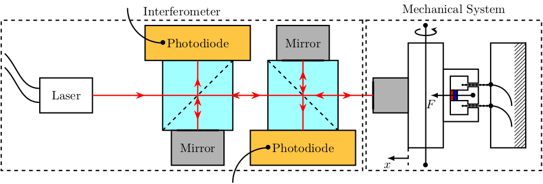
13 Optics
13.1 Interferometer - Schematic
\begin{tikzpicture} % Parameters definitions \def\splitw{2.0cm} % Width of the split mirrors \def\splith{2.0cm} % Height of the split mirrors \def\photow{3.0cm} % Width of the photodiodes \def\photoh{1.0cm} % Height of the photodiodes \def\mirrorw{1.0cm} % Width of the mirrors \def\mirrorh{1.5cm} % Height of the mirrors \def\spacing{1.0cm} % First intersection of the beam % Colors \definecolor{c_beamsplitter}{RGB}{162,255,255} % light blue \definecolor{c_photodiode}{RGB}{254,197,66} % light orange \definecolor{c_mirror}{RGB}{178,178,178} % light grey \definecolor{c_polar_beamsplitter}{RGB}{162, 180, 255} % blue \definecolor{c_polarizer}{RGB}{120,120,120} % light grey \definecolor{c_quart_wave_plate}{RGB}{60,60,60} % light grey % Styles \tikzstyle{laser} = [draw, fill=c_mirror, minimum width=2.0cm, minimum height=1.0cm] \tikzstyle{beamsplitter} = [draw, fill=c_beamsplitter, minimum width=2.0cm, minimum height=2.0cm] \tikzstyle{polar_beamsplitter} = [draw, fill=c_polar_beamsplitter, minimum width=2.0cm, minimum height=2.0cm] \tikzstyle{photodiode} = [draw, fill=c_photodiode, minimum width=3.0cm, minimum height=1.0cm] \tikzstyle{quart_wave_plate} = [draw, fill=c_quart_wave_plate, minimum width=0.1cm, minimum height=2.0cm] \tikzstyle{polarizer} = [draw, fill=c_polarizer, minimum width=2.0cm, minimum height=0.1cm] \tikzstyle{mirror} = [draw, fill=c_mirror, minimum width=0.5cm, minimum height=2.0cm] \tikzstyle{mirror_hor} = [draw, fill=c_mirror, minimum width=2.0cm, minimum height=0.5cm] % Elements \node[laser] (laser) {}; \node[polar_beamsplitter, right=2.0*\spacing of laser] (PBS1) {}; \node[photodiode, above=1.0*\spacing of PBS1] (PD1) {}; \node[quart_wave_plate, right=0.5*\spacing of PBS1] (WP1) {}; \node[beamsplitter, right=0.5*\spacing of WP1] (BS) {}; \node[polarizer, below=0.5*\spacing of BS] (P) {}; \node[photodiode, below=0.5*\spacing of P] (PD2) {}; \node[quart_wave_plate, right=0.5*\spacing of BS] (WP2) {}; \node[polar_beamsplitter, right=0.5*\spacing of WP2] (PBS2) {}; \node[mirror, right=2.0*\spacing of PBS2] (M2) {}; \node[mirror_hor, above=1.0*\spacing of PBS2] (M1) {}; % Beam Splitter orientations \draw[dashed] (PBS1.north west) -- (PBS1.south east); \draw[dashed] (BS.north east) -- (BS.south west); \draw[dashed] (PBS2.north east) -- (PBS2.south west); % LASER \draw[red, ->-=.5] (laser.east) -- (PBS1.center); \draw[red, ->-=.5] (PBS1.center) -- (PD1.south); \draw[red, ->-=.7, -<-=.3] (PBS1.center) -- (BS.center); \draw[red, ->-=.7, -<-=.3] (BS.center) -- (PBS2.center); \draw[red, ->-=.7, -<-=.3] (PBS2.center) -- (M1.south); \draw[red, ->-=.7, -<-=.3] (PBS2.center) -- (M2.west); \draw[red, ->-=.7, -<-=.3] (BS.center) -- (PD2.north); % Nomenclature \path[] (laser.north) node[above]{Laser Source}; \path[] (PBS1.south) node[below, align=center]{Polarizing\\ Beamsplitter}; \path[] (PBS2.south) node[below, align=center]{Polarizing\\ Beamsplitter}; \path[] (BS.north) node[above]{Beamsplitter}; \path[] (PD1.north) node[above]{Photodiode}; \path[] (PD2.south) node[below]{Photodiode}; \path[] (M1.north) node[above]{Fixed mirror}; \path[] (M2.north) node[above]{Moving mirror}; \draw[<-] (P.south east) -- ++(0.8*\spacing, -0.5*\spacing) -- ++(0.3*\spacing, 0) node[right]{Polarizer}; \node[above=\spacing of BS, align=center] (quarter_BS_label) {Quarter-Wave\\ Plate}; \draw[<-] (WP2.north) -- (quarter_BS_label.east); \draw[<-] (WP1.north) -- (quarter_BS_label.west); % Xg \draw[dashed] (M2.south west) --++(0, -0.5*\spacing); \draw[->] ($(M2.south west) + (0, -0.3*\spacing)$) -- ++(0.7*\spacing, 0) node[below]{$\hat{x}_g$}; % Interferometer \node[fit={($(laser.west|-PD1.north)+(-0.5*\spacing, 0.5*\spacing)$) ($(PD2.south-|PBS2.east)+(0.5*\spacing, -0.5*\spacing)$)}, inner sep=0pt, draw, dashed, color=gray, label={Interferometer}] (P) {}; \end{tikzpicture}

14 Loop Shaping
14.1 Loop Shaping the Open Loop transfer function
\begin{tikzpicture} % Phase Axis \draw[->] (-0.3, -0.5) -- ++(8, 0) node[above]{$\omega$}; \draw[<-] (0, 0) node[left]{$\angle L(j\omega)$} -- ++(0, -2.3); % Gain Axis \draw[->] (-0.3, 2) -- ++(8, 0) node[above]{$\omega$}; \draw[->] (0, 0.5) -- ++(0, 3) node[left]{$\left|L(j\omega)\right|$}; % Gain Slopes \draw[shift={(0,2)}] (0.5, 1.25) -- node[midway, above]{$-2$} (2, 0.5) -- node[midway, above]{$-1$} (6, -0.5) -- node[midway, below left]{$-2$} (7.5, -1.25); % Forbiden region \path[shift={(0,1.8)}, fill=red!50!white] (0.5, 1.25) -- (2, 0.5) -| coordinate[near start](lfshaping) cycle; \path[shift={(0,2.2)}, fill=red!50!white] (6, -0.5) -- (7.5, -1.25) |- coordinate[near end](hfshaping) cycle; \draw[<-] (lfshaping) -- ++(0, -0.8) node[below, align=center]{Reference\\Tracking}; \draw[<-] (hfshaping) -- ++(0, 0.8) node[above, align=center]{Noise\\Rejection}; % Crossover frequency \node[below] at (4,2){$\omega_c$}; % Phase \draw[] (0.5, -2) -- (2, -2)[out=0, in=-180] to (4, -1.25)[out=0, in=-180] to (6, -2) -- (7.5, -2); \draw[] (0.5, -2) -- (2, -2)[out=0, in=-180] to (4, -1.25)[out=0, in=-180] to (6, -2) -- (7.5, -2); % Phase Margin \draw[->, dashed] (4, -2) -- node[midway, right]{$\phi$} (4, -1.25); \draw[dashed] (0, -2) node[left]{$-\pi$} -- (7.5, -2); \end{tikzpicture}
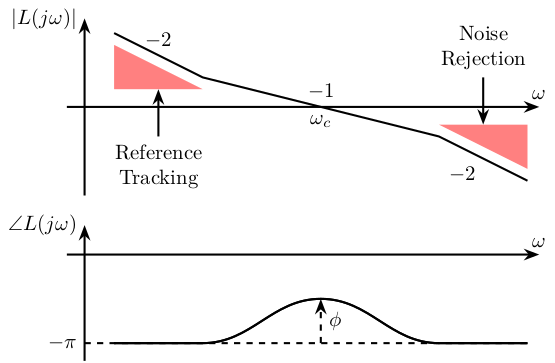
14.2 Loop Shaping of \(S\) and \(T\)
\definecolor{T}{rgb}{0.230, 0.299, 0.754}% \definecolor{S}{rgb}{0.706, 0.016, 0.150}% \setlength\fwidth{7cm} \setlength\fheight{4cm} \begin{tikzpicture} \begin{axis}[% name=axis, width=7cm, height=4cm, xmode=log, xmin=0.1, xmax=1000, xminorticks=true, xlabel={Frequency [Hz]}, ymode=log, ymin=0.001, ymax=10, yminorticks=true, ylabel={Magnitude}, xminorgrids, yminorgrids ] \addplot [color=T, line width=1.5pt, forget plot] table[row sep=crcr]{% 0.1 1.00020952606124\\ 0.449420266211914 1.00439444056532\\ 0.76715811767793 1.01272784524132\\ 1.07902879151618 1.02491454851703\\ 1.39683511798874 1.04114413762629\\ 1.74277467840892 1.06277127886704\\ 2.1150728248688 1.09005589290585\\ 2.52000499376409 1.12358430111627\\ 2.97490754721444 1.1647515613402\\ 3.54445567397044 1.21915995877579\\ 4.4222739805059 1.30220386269588\\ 5.51749237612913 1.38869606135927\\ 6.16296625513294 1.42329223210868\\ 6.69616005485322 1.44002371458486\\ 7.20871503378214 1.4451033802025\\ 7.68928372075831 1.43993984995528\\ 8.2018894992022 1.42428828042971\\ 8.66837993001978 1.40175058285261\\ 9.16140245713852 1.37050262756076\\ 9.68246611930312 1.33069793321537\\ 10.3279473191895 1.27424467776163\\ 11.0164594963366 1.20854214707295\\ 11.7508713090481 1.13570495506675\\ 12.650337203959 1.04677883765563\\ 13.7447909267754 0.943679050123237\\ 15.0722530931076 0.830394240297457\\ 16.6810053720006 0.712414936441653\\ 18.8050405512858 0.586622272210216\\ 21.7940698430296 0.455264142531017\\ 26.2070669648385 0.326579283518924\\ 33.3060034362459 0.208672671063449\\ 46.8458011587305 0.108471783502643\\ 124.478714618791 0.0164997756678873\\ 159.662602210143 0.0104152887225431\\ 195.565071586595 0.0072640647690405\\ 233.006141069692 0.00540031929981286\\ 270.042071883777 0.00426457540484721\\ 310.092663593193 0.00346444056474815\\ 349.577557436328 0.0029289521926441\\ 394.090164040345 0.00250741699876454\\ 440.193518520887 0.00219836200013106\\ 487.178021879463 0.00196912938874112\\ 539.17746403875 0.00178183136845956\\ 596.727119597332 0.00162874587725399\\ 660.419396233031 0.00150356016008975\\ 730.909932860291 0.00140111130596261\\ 808.924348680594 0.00131717393449145\\ 895.26571259964 0.00124828640279652\\ 1000 0.00118697716847575\\ }; \addplot [color=S, line width=1.5pt, forget plot] table[row sep=crcr]{% 0.211020342856859 0.000991355164946403\\ 0.492824957004051 0.00536343282029864\\ 2.42876438246045 0.128327524780232\\ 3.54445567397044 0.267992154829373\\ 4.4632339267104 0.413805848676621\\ 5.26892142135068 0.557587736797486\\ 5.99484250318941 0.693160496305138\\ 6.63470812109235 0.81193792953703\\ 7.27548352919623 0.925424392834698\\ 7.90492762269643 1.02770565894096\\ 8.51000724712225 1.11478829979149\\ 9.07732652521023 1.18510732855918\\ 9.68246611930312 1.24761337860369\\ 10.3279473191895 1.30053311262914\\ 11.0164594963366 1.34273501848344\\ 11.7508713090481 1.37382109949711\\ 12.534242654614 1.39409360664554\\ 13.3698374182495 1.4044213762404\\ 14.3932264471941 1.40566001105301\\ 15.6384675830225 1.39616695613207\\ 17.1488196987054 1.37570643727067\\ 19.3324228755505 1.33943394453979\\ 23.6796006783308 1.26895368211008\\ 31.2244282309286 1.18029446890997\\ 37.5469422407334 1.13328156575089\\ 44.7353305449847 1.09818850827496\\ 53.793615039807 1.07013138018377\\ 65.8898955079995 1.04777741305257\\ 82.9695852083491 1.03046080493667\\ 110.418805085416 1.01711094138512\\ 159.662602210143 1.00783805748313\\ 275.067600790807 1.00210387254234\\ 794.145171902934 0.999522245381891\\ 1000 0.999396233385764\\ }; \path[fill=S, opacity=0.5] (0.02, 1e-5) -- (2, 0.1) -| (0.02, 1e-5); \path[fill=S, opacity=0.5] (1, 2) -- (100, 2) -- (100, 10) -| (cycle); \path[fill=T, opacity=0.5] (50, 0.1) -- (1000, 0.00035) |- (50, 0.1); \end{axis} \end{tikzpicture}

15 Modern Control
15.1 LQG
\begin{tikzpicture} % Blocs \node[block={2.0cm}{1.5cm}] (P) {Plant}; \node[block={2.0cm}{1.5cm}, below left=0.7 and -0.5 of P] (Kr) {LQR}; \node[block={2.0cm}{1.5cm}, below right=0.7 and -0.5 of P, align=center] (kalman) {Kalman\\Filter}; % Input and outputs coordinates \coordinate[] (inputwd) at ($(P.north west)!0.25!(P.north east)$); \coordinate[] (inputwn) at ($(P.north west)!0.75!(P.north east)$); % Connections and labels \draw[<-] (inputwd) -- ++(0, 0.6)node[right]{$w_d$}; \draw[<-] (inputwn) -- ++(0, 0.6)node[right]{$w_n$}; \draw[->] (P.east) node[above right]{$y$} -- ++(2, 0) |- (kalman.east); \draw[<-] (P.west) -- ++(-2, 0) |- (Kr.west); \draw[->] (kalman.west) -- (Kr.east) node[above right] {$\hat{x}$}; \draw[->] ($(P.west) + (-0.6, 0)$) node[branch]{}node[above]{$u$} -- ++(0, -1) -| (kalman.north); \end{tikzpicture}

15.2 LQG with Kalman filter
\begin{tikzpicture} % Blocs \node[block={2.0cm}{1.5cm}] (P) {Plant}; \node[block, below=1 of P] (Kf) {$K_f$}; \node[block, below right=0.7 and 0 of Kf] (C) {$C$}; \node[addb={+}{-}{}{+}{}, right=0.7 of C] (sub) {}; \node[block, below left=0.7 and 0 of Kf] (int) {$\int$}; \node[addb={+}{+}{+}{}{+}, left=0.7 of int] (add) {}; \node[block, below=0.7 of int] (A) {$A$}; \node[block, left=2.7 of Kf] (B) {$B$}; \node[block, below left=0.7 and 1 of A] (Kr) {$-K_r$}; % \node[block={2.0cm}{1.5cm}, below right=0.7 and -0.5 of P, align=center] (kalman) {Kalman\\Filter}; % % Input and outputs coordinates \coordinate[] (inputwd) at ($(P.north west)!0.25!(P.north east)$); \coordinate[] (inputwn) at ($(P.north west)!0.75!(P.north east)$); % Connections and labels \draw[<-] (inputwd) -- ++(0, 0.6)node[right]{$w_d$}; \draw[<-] (inputwn) -- ++(0, 0.6)node[right]{$w_n$}; \draw[->] (P.east) node[above right]{$y$} -- ++(3, 0) |- (sub.east); \draw[->] (sub.north) |- (Kf.east); \draw[->] (Kf.west) -| (add.north); \draw[->] (add.east) -- (int.west) node[above left]{$\dot{\hat{x}}$}; \draw[->] (int.east) -- (C.west); \draw[->] (C.east) -- (sub.west) node[above left]{$\hat{y}$}; \draw[->] ($(int.east)!0.5!(C.west)$) node[branch](point){} |- (Kr.east) node[above right]{$\hat{x}$}; \draw[->] (B.south) |- (add.west); \draw[->] (A.west) -| (add.south); \draw[<-] (P.west) node[above left]{$u$} -- ++(-4.2, 0) |- (Kr.west); \draw[->] (P-|B)node[branch]{} -- (B.north); \draw[->] (A-|point)node[branch]{} -- (A.east); %% Kalman Filter \node[fit={($(B.north west) + (-0.3, 0.3)$) ($(sub.east|-A.south) + (0.3, -0.3)$)}, inner sep=0pt, draw, dashed, color=gray, label={Kalman Filter}] {}; \end{tikzpicture}

15.3 LQG with Integral Action
\begin{tikzpicture} % Blocs \node[block={2.0cm}{1.5cm}] (P) {Plant}; \node[block={2.0cm}{1.5cm}, left=1 of P] (Kr) {LQR}; \coordinate[] (input1) at ($(Kr.north west)!0.25!(Kr.south west)$); \coordinate[] (input2) at ($(Kr.north west)!0.75!(Kr.south west)$); \node[block, left=1 of input1] (int) {$\int$}; \node[addb={+}{+}{}{}{-}, left=0.7 of int] (addb) {}; \node[block={2.0cm}{1.5cm}, below=0.7 of Kr, align=center] (kalman) {Kalman\\Filter}; % Input and outputs coordinates \coordinate[] (inputwd) at ($(P.north west)!0.25!(P.north east)$); \coordinate[] (inputwn) at ($(P.north west)!0.75!(P.north east)$); \coordinate[] (inputu) at ($(kalman.north east)!0.25!(kalman.south east)$); \coordinate[] (inputy) at ($(kalman.north east)!0.75!(kalman.south east)$); % Connections and labels \draw[<-] (addb.west) -- ++(-0.8, 0)node[above right]{$r$}; \draw[->] (addb.east) -- (int.west); \draw[->] (int.east) -- (input1); \draw[->] (Kr.east) -- (P.west) node[above left]{$u$}; \draw[<-] (inputwd) -- ++(0, 0.6)node[right]{$w_d$}; \draw[<-] (inputwn) -- ++(0, 0.6)node[right]{$w_n$}; \draw[->] (P.east) -- ++(1, 0) node[above left]{$y$}; \draw[->] ($(Kr.east)!0.5!(P.west)$)node[branch]{} |- (inputu); \draw[->] ($(P.east) + (0.4, 0)$)node[branch]{} |-node[branch](point){} (inputy); \draw[->] (kalman.west) -- ++(-0.6, 0) |- (input2); \draw[->] (point) -- ++(0, -0.6) -| (addb.south); % \draw[->] (P.east) node[above right]{$y$} -- ++(2, 0) |- (kalman.east); % \draw[<-] (P.west) -- ++(-2, 0) |- (Kr.west); % \draw[->] (kalman.west) -- (Kr.east) node[above right] {$\hat{x}$}; % \draw[->] ($(P.west) + (-0.6, 0)$) node[branch]{}node[above]{$u$} -- ++(0, -1) -| (kalman.north); \end{tikzpicture}

16 H-Infinity Control
16.1 H-Infinity norm - Example
\begin{tikzpicture} \begin{axis}[% width=8cm, height=4cm, at={(0,0)}, xmode=log, xmin=1, xmax=100, xtick={1, 10, 100}, xlabel={Frequency [Hz]}, xminorticks=true, ymode=log, ymin=1e-07, ymax=1e-03, yminorticks=true, ylabel={Amplitude}, xminorgrids, yminorgrids, ] \addplot [color=black, line width=1.5pt] table[row sep=crcr]{% 0.1 1.00071289229918e-05\\ 0.535462089927361 1.00629696275413e-05\\ 0.914031074875622 1.01751802148999e-05\\ 1.27381132318648 1.03396650881806e-05\\ 1.63385387780986 1.05651071336161e-05\\ 1.98288394912707 1.08476146316216e-05\\ 2.31934505927443 1.11868363393455e-05\\ 2.66333272517498 1.16112331310501e-05\\ 3.00246170908556 1.21190106623558e-05\\ 3.32293251639897 1.26953121646474e-05\\ 3.64385898376354 1.33851807783414e-05\\ 3.95911026646847 1.41965909316819e-05\\ 4.26215882901533 1.51310544226076e-05\\ 4.58840412645475 1.63510704204168e-05\\ 4.89428989611453 1.77552394334518e-05\\ 5.22056752784699 1.96240612794244e-05\\ 5.51749237612912 2.1779819909373e-05\\ 5.83130511352622 2.47297744562643e-05\\ 6.10640754223204 2.8144855808222e-05\\ 6.39448842855694 3.29965237753833e-05\\ 6.69616005485322 4.038141380279e-05\\ 6.94771254846023 4.97339519359647e-05\\ 7.20871503378215 6.5493219573343e-05\\ 7.41088151564157 8.65939135693087e-05\\ 7.61871770232298 0.000127907864792606\\ 7.8323825991792 0.000228283473801179\\ 7.97814457207661 0.000325658264938109\\ 8.05203967082547 0.000311665674001995\\ 8.58882855954626 8.67579751580965e-05\\ 8.9114823228402 5.75121893473289e-05\\ 9.24625711640573 4.26278275096007e-05\\ 9.68246611930311 3.20066002705199e-05\\ 10.1392540755881 2.55319149958026e-05\\ 10.7159339982267 2.05167738110512e-05\\ 11.3254131515281 1.71720619792256e-05\\ 11.9695570235905 1.48241559200504e-05\\ 12.6503372039591 1.31254799109891e-05\\ 13.3698374182495 1.18806490881223e-05\\ 14.000583824681 1.11171042854347e-05\\ 14.796880626864 1.04480050084398e-05\\ 15.4949503931463 1.00785259243532e-05\\ 16.0770442167382 9.90054670846507e-06\\ 16.6810053720006 9.82899320001872e-06\\ 17.3076553419573 9.87247471845663e-06\\ 17.7930438991858 9.99045263410708e-06\\ 18.292045048463 1.01940119629396e-05\\ 18.979216428391 1.06287386065914e-05\\ 19.6922025547917 1.13096526463851e-05\\ 20.4319732019527 1.23437340481618e-05\\ 21.1995345753607 1.39174737029986e-05\\ 21.9959306803008 1.63593144037818e-05\\ 22.822244741869 2.01700780191023e-05\\ 23.8989256623105 2.63524692594474e-05\\ 24.1202820761801 2.70907592896994e-05\\ 24.3436887354311 2.731317081971e-05\\ 24.5691646298279 2.69211924246262e-05\\ 25.0264009641792 2.44707204445985e-05\\ 25.7282596744793 1.90621970631345e-05\\ 27.4434330322837 1.0248043443746e-05\\ 28.7381269185107 7.19490097356409e-06\\ 30.0939003444972 5.14269809348256e-06\\ 30.6539529505652 4.15881203171274e-06\\ 31.2244282309286 3.73314982747125e-06\\ 38.2456972246701 1.57857995161908e-06\\ 41.9394395566719 1.13481333526102e-06\\ 46.4158883361277 8.17247152544272e-07\\ 52.3261423948667 5.73814984780234e-07\\ 59.5353313081437 4.04126850020228e-07\\ 68.9983712143002 2.78377442457679e-07\\ 81.4537176628074 1.88006048476169e-07\\ 95.275004724273 1.3284995271676e-07\\ 110.418805085416 9.8135231151934e-08\\ 168.743567772738 4.20885851503597e-08\\ 190.230118866895 3.33296781885143e-08\\ 193.770333747799 3.22232788221944e-08\\ 197.376432630026 3.07878086627022e-08\\ 206.688024962908 2.89004160235708e-08\\ 210.534524276671 2.85234972082828e-08\\ 212.484535249889 2.85290589196419e-08\\ 216.438908606402 2.87657289637283e-08\\ 218.443607114943 2.65277800901538e-08\\ 220.466873523941 2.12806714160706e-08\\ 222.508879812837 1.97601919582274e-08\\ 228.74908173557 2.01193889599822e-08\\ 233.006141069693 1.9883868979034e-08\\ 239.540735872088 1.91855053924175e-08\\ 253.164847863136 1.74800275314286e-08\\ 290.712337727258 1.34979471740964e-08\\ 315.863540826782 1.13799953682076e-08\\ 330.764978074424 1.01156762045925e-08\\ 356.083255262927 8.32008422521027e-09\\ 379.821530619074 7.28000661705942e-09\\ 607.832312829724 2.91350361938659e-09\\ 1000 1.0767326649734e-09\\ }; \draw[dashed] (8, 0.0003) node[]{$\bullet$} -- node[midway, below]{$\|G\|_\infty$} (1, 0.0003); \node[above] at (25, 2.45e-05) {$|G(j\omega)|$}; \end{axis} \end{tikzpicture}

16.2 Performance Specification - Sensitivity Function
\begin{tikzpicture} \begin{axis}[% width=8cm, height=4cm, at={(0,0)}, xmode=log, xmin=0.01, xmax=10000, ymin=-80, ymax=40, ylabel={Magnitude [dB]}, xlabel={Frequency [Hz]}, ytick={40, 20, 0, -20, -40, -60, -80}, xminorgrids, yminorgrids ] \addplot [thick, color=black, forget plot] table[row sep=crcr]{% 0.01 -60\\ 0.1 -60\\ 190 6\\ 10000 6\\ }; \draw[<-] (0.05, -60) -- (0.1, -70); \draw (0.1, -70) -- (2, -70) node[right, fill=white, draw]{$\SI{-60}{\decibel} \rightarrow$ \footnotesize{Static error}}; \draw[<-] (1, -40) -- (10, -40) node[right, fill=white, draw]{$\SI{20}{\decibel/dec} \rightarrow$ \footnotesize{Ref. track.}}; \draw[<-] (100, 0) -- (3, 0) node[left, fill=white, draw]{$\omega_c \rightarrow$ \footnotesize{Speed}}; \draw[<-] (300, 6) -- (200, 20); \draw (200, 20) -- (10, 20) node[left, fill=white, draw]{$\SI{6}{\decibel} \rightarrow$ \footnotesize{Module margin}}; \end{axis} \end{tikzpicture}

16.3 Performance Specification - Sensitivity Function
\begin{tikzpicture} \begin{axis}[% width=8cm, height=4cm, at={(0,0)}, xmode=log, xmin=0.01, xmax=100, ymin=-80, ymax=40, ytick={40, 20, 0, -20, -40, -60, -80}, ylabel={Magnitude [dB]}, xlabel={Frequency [Hz]}, ylabel shift=-6pt, xminorgrids, yminorgrids ] \addplot [thick, color=black, forget plot] table[row sep=crcr]{% 0.01 20\\ 0.1 20\\ 100 -100\\ }; \draw[<-] (1, -20) -- (1, 0) node[above]{Roll-off}; \end{axis} \end{tikzpicture}
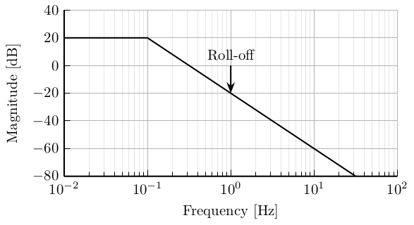
16.4 S/KS Mixed sensitivity - Disturbance Rejection
\begin{tikzpicture} % Blocs \node[block] (G) {$G$}; \node[addb, right=1 of G] (addw) {}; \node[addb={+}{-}{}{}{+}, right=1 of addw] (addr) {}; \node[block, above right=0.5 and 1 of addw] (W2) {$-W_2$}; \node[block, above=0.5 of W2] (W1) {$W_1$}; \node[block, below=1 of addw] (K) {$K$}; \coordinate[right=1.2 of W1] (z); \coordinate[above left=2 and 1.7 of G] (w); \coordinate (u) at (w|-G); \coordinate (v) at (z|-G); \node[fit={($(G.south west) + (-1, -0.5)$) ($(W1.north east) + (0.5, 0.5)$)}, inner sep=0pt, draw, dashed, color=gray, label={Generalized Weighted Plant $P$}] (P) {}; % Connections \draw[->] (G.east) -- (addw.west); \draw[->] ($(addw.east)+(0.5, 0)$)node[branch]{} |- (W1.west); \draw[->] ($(G.west)+(-0.5, 0)$)node[branch]{} |- (W2.west); \draw[->] (W1.east) -- (W1-|z) node[above left](z1){$z_1$}; \draw[->] (W2.east) -- (W2-|z) node[above left](z2){$z_2$}; \draw[->] (addw.east) -- (addr.west); \draw[<-] (addr.south) -- ++(0, -0.6)node[above right]{$r = 0$}; \draw[->] (addr.east) -- (addw-|z) |- node[near start, right]{$v$} (K.east); \draw[->] (K.west) -| node[near end, left]{$u$} (G-|w) -- (G.west); \draw[->] (w) node[above]{$w = d$} -| (addw.north); % W and Z brackets \draw [decoration={brace, raise=5pt}, decorate] (z1.north east) -- node[right=6pt]{$z$} (z2.south east); \end{tikzpicture}
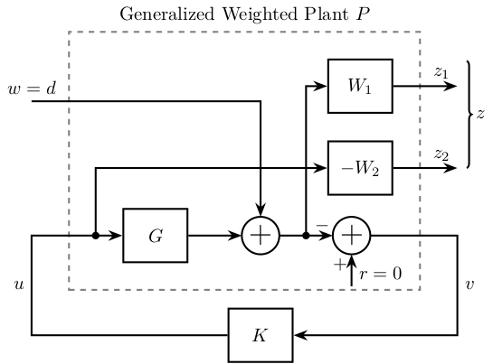
16.5 S/KS Mixed sensitivity - Reference Tracking
\begin{tikzpicture} % Blocs \node[block] (G) {$G$}; \node[addb={+}{-}{+}{}{}, right=1 of G] (addw) {}; \node[block, above right=0.5 and 1 of addw] (W2) {$W_2$}; \node[block, above=0.5 of W2] (W1) {$W_1$}; \node[block, below=1 of addw] (K) {$K$}; \coordinate[right=1.2 of W1] (z); \coordinate[above left=2 and 1.7 of G] (w); \coordinate (u) at (w|-G); \coordinate (v) at (z|-G); \node[fit={($(G.south west) + (-1, -0.5)$) ($(W1.north east) + (0.5, 0.5)$)}, inner sep=0pt, draw, dashed, color=gray, label={Generalized Weighted Plant $P$}] (P) {}; % Connections \draw[->] (G.east) -- (addw.west); \draw[->] ($(addw.east)+(0.5, 0)$)node[branch]{} |- (W1.west); \draw[->] ($(G.west)+(-0.5, 0)$)node[branch]{} |- (W2.west); \draw[->] (W1.east) -- (W1-|z) node[above left](z1){$z_1$}; \draw[->] (W2.east) -- (W2-|z) node[above left](z2){$z_2$}; \draw[->] (addw.east) -- (addw-|z) |- node[near start, right]{$v$} (K.east); \draw[->] (K.west) -| node[near end, left]{$u$} (G-|w) -- (G.west); \draw[->] (w) node[above]{$w = r$} -| (addw.north); % W and Z brackets \draw [decoration={brace, raise=5pt}, decorate] (z1.north east) -- node[right=6pt]{$z$} (z2.south east); \end{tikzpicture}
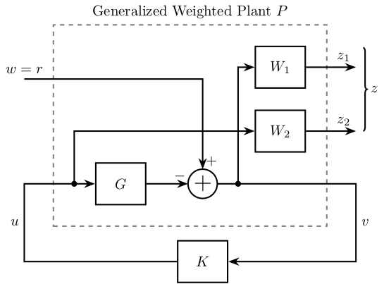
16.6 S/T Mixed sensitivity
\begin{tikzpicture} % Blocs \node[block] (G) {$G$}; \node[addb={+}{-}{+}{}{}, right=1 of G] (addw) {}; \node[block, above right=0.5 and 1 of addw] (W2) {$W_2$}; \node[block, above=0.5 of W2] (W1) {$W_1$}; \node[block, below=1 of addw] (K) {$K$}; \coordinate[right=1.2 of W1] (z); \coordinate[above left=2 and 1.2 of G] (w); \coordinate (u) at (w|-G); \coordinate (v) at (z|-G); \node[fit={($(G.south west) + (-0.5, -0.5)$) ($(W1.north east) + (0.5, 0.5)$)}, inner sep=0pt, draw, dashed, color=gray, label={Generalized Weighted Plant $P$}] (P) {}; % Connections \draw[->] (G.east) -- (addw.west); \draw[->] ($(addw.east)+(0.5, 0)$)node[branch]{} |- (W1.west); \draw[->] ($(G.east)+(0.5, 0)$)node[branch]{} |- (W2.west); \draw[->] (W1.east) -- (W1-|z) node[above left](z1){$z_1$}; \draw[->] (W2.east) -- (W2-|z) node[above left](z2){$z_2$}; \draw[->] (addw.east) -- (addw-|z) |- node[near start, right]{$v$} (K.east); \draw[->] (K.west) -| node[near end, left]{$u$} (G-|w) -- (G.west); \draw[->] (w) node[above]{$w = r$} -| (addw.north); % W and Z brackets \draw [decoration={brace, raise=5pt}, decorate] (z1.north east) -- node[right=6pt]{$z$} (z2.south east); \end{tikzpicture}

16.7 Signal Based H-Infinity
\begin{tikzpicture} % Blocs \node[block] (G) {$G$}; \node[block, above=0.6 of G] (Gd) {$G_d$}; \node[block, above=0.6 of Gd] (Wref) {$W_\text{ref}$}; \node[block={1.2cm}{1.5cm}, left=0.6 of G] (K) {$K$}; % Input and outputs coordinates \coordinate[] (inputy) at ($(K.south west)!0.25!(K.north west)$); \coordinate[] (inputr) at ($(K.south west)!0.75!(K.north west)$); \node[addb, right=0.5 of G] (addy) {}; \node[addb={+}{-}{}{}{+}, right=0.1 of Wref-|addy.east] (sub) {}; \node[block, right=0.5 of sub] (We) {$W_e$}; \node[block] (Wu) at ($(G.south-|We) + (0, -0.6)$) {$W_u$}; \node[block, left=1.3 of inputr] (Wr) {$W_r$}; \node[block] (Wd) at (Wr|-Gd) {$W_d$}; \node[addb, below left=1 and 0.3 of K] (addn) {}; \node[block] (Wn) at (Wr|-addn) {$W_n$}; % Connections \draw[->] (Wd.east) -- (Gd.west); \draw[->] (Gd.east) -| (addy.north); \draw[->] (Wr.east) -- (inputr.west); \draw[->] (Wn.east) -- (addn.west); \draw[->] (addn.north) |- (inputy.west) node[above left]{$y_m$}; \draw[->] ($(K.east)+(0.2, 0)$)node[branch](u){} |- (Wu.west); \draw[->] ($(Wr.east)+(0.4, 0)$)node[branch](rs){} |- (Wref.west); \draw[->] (Wref.east) -- (sub.west); \draw[->] (sub.east) -- (We.west); \draw[->] (K.east) -- (G.west); \draw[->] (G.east) -- (addy.west); \draw[] (addy.east) -- (addy-|sub)node[branch]{}node[right]{$y$}; \draw[->] (addy-|sub) -- (sub.south); \draw[->] (addy-|sub) |- (addn.east); \draw[<-] (Wd.west) -- ++(-0.6, 0) node[above right]{$d$}; \draw[<-] (Wr.west) -- ++(-0.6, 0) node[above right]{$r$}; \draw[<-] (Wn.west) -- ++(-0.6, 0) node[above right]{$n$}; \draw[->] (We.east) -- ++( 0.6, 0) node[above left]{$z_1$}; \draw[->] (Wu.east) -- ++( 0.6, 0) node[above left]{$z_2$}; \node[above] at (u) {$u$}; \node[above right] at (rs) {$r_s$}; \end{tikzpicture}
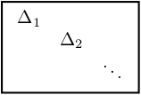
16.8 Mixed sensitivity configuration
\begin{tikzpicture} \node[addb={+}{}{}{}{-}] (addsub) {}; \node[block, right=1.5 of addsub] (K) {$K(s)$}; \node[block, right=1.5 of K] (G) {$G(s)$}; % Weighting Functions \node[block, fill=black!40] (w1) at ($0.5*(addsub.east) + 0.5*(K.west) + (0, 1.5)$) {$W1(s)$}; \node[block, fill=black!40] (w2) at ($0.5*(K.east) + 0.5*(G.west) + (0, 1.5)$) {$W2(s)$}; \node[block, fill=black!40] (w3) at ($(G.east) + (0.5, 1.5)$) {$W3(s)$}; % Arrows \draw[<-] (w1) -- (w1|-K); \draw[<-] (w2) -- (w2|-K); \draw[<-] (w3) -- (w3|-K); \draw[->] (w1.north) -- ++(0, 0.6) node[below right]{$z1$}; \draw[->] (w2.north) -- ++(0, 0.6) node[below right]{$z2$}; \draw[->] (w3.north) -- ++(0, 0.6) node[below right]{$z3$}; \draw[<-] (addsub) -- ++(-1.5, 0)node[above right]{$w$}; \draw[->] (addsub) -- (K.west) node[above left]{$\epsilon$}; \draw[->] (K.east) -- (G.west)node[above left]{$u$}; \draw[->] (G.east) -- ++(1.5, 0) node[above left]{$y$} -- ++(0, -1.5) -| (addsub); \end{tikzpicture}

16.9 4 blocs criterion
\begin{tikzpicture} \node[addb={+}{}{}{}{-}] (addsub) {}; \node[block, right=1 of addsub, opacity=0] (K) {$K(s)$}; \node[addb={+}{}{}{}{}, right=1.8 of K] (addcommand) {}; \node[block, right=1 of addcommand] (G) {$G(s)$}; % Weighting Functions \node[block, fill=black!40] (w1) at ($0.5*(K.west) + 0.5*(addsub.east) + (0, 1.5)$) {$W1(s)$}; \node[block, fill=black!40] (w2) at ($0.5*(addcommand.west) + 0.5*(K.east) + (0, 1.5)$) {$W2(s)$}; \node[block, fill=black!40] (w3) at ($0.5*(G.west) + 0.5*(addcommand.east) + (0, 1.5)$) {$W3(s)$}; % Arrows \draw[->] ($0.5*(K.west) + 0.5*(addsub.east) $) -- (w1); \draw[->] ($0.5*(addcommand.west) + 0.5*(K.east)$) -- (w2); \draw[->] (w3) -| (addcommand.north) node[above right]{$d$}; \draw[->] (w1.north) -- ++(0, 0.6) node[right]{$\hat{\epsilon}$}; \draw[->] (w2.north) -- ++(0, 0.6) node[right]{$\hat{u}$}; \draw[<-] (w3.east) -- ++(0.6, 0) node[above]{$\hat{d}$}; \draw[<-] (addsub) -- ++(-1.5, 0)node[above right]{$r$}; \draw[->] (addsub) -- (K.west) node[above left]{$\epsilon$}; \draw[->] (K.east)node[above right]{$u$} -- (addcommand); \draw[->] (addcommand) -- (G); \draw[->] (G.east) node[above right]{$y$} -- ++(0.6, 0) -- ++(0, -1.5) -| (addsub); \end{tikzpicture}
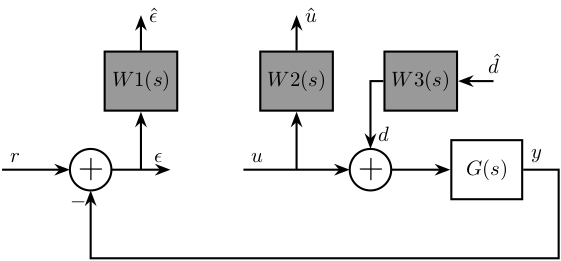
16.10 4 blocs criterion - bis
\begin{tikzpicture} \node[addb] (addsub) {}; \node[block, left=1.0 of addsub, fill=black!40] (1) {$1/1$}; \node[block, right=1.8 of addsub] (correcteur) {$K(s)$}; \node[addb, right=1.8 of correcteur] (addcommand) {}; \node[block, right=1.8 of addcommand] (system) {$G(s)$}; \node[block, fill=black!40] (w1) at ($0.5*(correcteur.west) + 0.5*(addsub.east) + (0, 1.5)$) {$W1(s)$}; \node[block, fill=black!40] (w2) at ($0.5*(addcommand.west) + 0.5*(correcteur.east) + (0, 1.5)$) {$W2(s)$}; \node[block, fill=black!40] (w3) at ($0.5*(system.west) + 0.5*(addcommand.east) + (0, 1.5)$) {$W3(s)$}; \node[addb] (addnoise) at ($(system.east) + (0.8, -1.5)$) {}; \node[block, fill=black!40] (w4) at ($(addnoise) + (-1.5, -1.5)$) {$W4(s)$}; \draw[->] ($0.5*(correcteur.west) + 0.5*(addsub.east) $) -- (w1); \draw[->] ($0.5*(addcommand.west) + 0.5*(correcteur.east)$) -- (w2); \draw[->] (w3) -| (addcommand.north) node[above right]{$p$}; \draw[->] (w1.north) -- ++(0, 0.6) node[right]{$z1$}; \draw[->] (w2.north) -- ++(0, 0.6) node[right]{$z2$}; \draw[<-] (w3.east) -- ++(0.6, 0) node[above]{$w2$}; \draw[<-] (1) -- ++(-1.5, 0)node[above right]{$w1$}; \draw[->] (1) -- (addsub) node[midway, above]{$c$}; \draw[->] (addsub) -- (correcteur.west) node[above left]{$\epsilon$}; \draw[->] (correcteur.east)node[above right]{$u$} -- (addcommand); \draw[->] (addcommand) -- (system); \draw[->] (system.east) node[above right]{$y$} -| (addnoise); \draw[->] (addnoise.west) -| (addsub); \draw[->] (w4.east) -| (addnoise); \draw[<-] (w4.west) -- ++(-0.6, 0) node[above]{$w4$}; \end{tikzpicture}

16.11 4 blocs criterion - General conf
\begin{tikzpicture} % Blocs \node[addb={+}{}{}{}{}] (addd) {}; \node[block, right=1 of addd] (G) {$G$}; \node[addb={+}{-}{}{}{}, right=1 of G] (addr) {}; % Inputs \coordinate[left=1.5 of addd] (u); \coordinate[above=1 of u] (d); \coordinate[above=1 of d] (r); % Outputs \coordinate[right=2 of addr] (y); \coordinate[above=1.5 of y] (u); \coordinate[above=1 of u] (e); \node[fit={($(e) + (-0.5, 0.5)$) ($(d|-G.south) + (0.5, -0.2)$)}, inner sep=0pt, draw, dashed, color=gray, label={Generalized Plant $P$}] (P) {}; \node[draw, block, below=1 of P] (K) {$K$}; % Connections \draw[->] (addd.east) -- (G.west); \draw[->] (G.east) -- (addr.west); \draw[->] (d)node[above right]{$d$} -| (addd.north); \draw[->] (r)node[above right]{$r$} -| (addr.north); \draw[->] ($(G.west)+(-0.5, 0)$)node[branch]{} |- (u) node[above left]{$u$}; \draw[->] ($(addr.east)+(0.5, 0)$)node[branch]{} |- (e) node[above left]{$\epsilon$}; \draw[->] (addr.east) -- (addr-|u) |- node[near start, right]{$v$} (K.east); \draw[<-] (addd.west) -- (addd-|d) |- node[near start, left]{$u$} (K.west); % W and Z brackets \draw [decoration={brace, raise=7pt}, decorate] (d.south west) -- node[left=8pt]{$w$} (r.north west); \draw [decoration={brace, raise=5pt}, decorate] (e.north east) -- node[right=6pt]{$z$} (u.south east); \end{tikzpicture}

16.12 4 blocs criterion - General conf with noise
\begin{tikzpicture} % Blocs \node[addb={+}{}{}{}{}] (addd) {}; \node[block, right=1 of addd] (G) {$G$}; \node[addb={+}{}{}{}{}, right=1 of G] (addn) {}; \node[addb={+}{-}{}{}{}, right=1 of addn] (addr) {}; % Inputs \coordinate[left=1 of addd] (u); \coordinate[above=1 of u] (d); \coordinate[above=1 of d] (n); \coordinate[above=1 of n] (r); % Outputs \coordinate[right=1.5 of addr] (y); \coordinate[above=1.5 of y] (u); \coordinate[above=1 of u] (e); \node[fit={($(r) + (0.5, 0.5)$) ($(e|-G.south) + (-0.6, -0.2)$)}, inner sep=0pt, draw, dashed, color=gray, label={Generalized Plant $P$}] (P) {}; \node[draw, block, below=1 of P] (K) {$K$}; % Connections \draw[->] (addd.east) -- (G.west); \draw[->] (G.east) -- (addn.west); \draw[->] (d)node[above right]{$d$} -| (addd.north); \draw[->] (n)node[above right]{$n$} -| (addn.north); \draw[->] (r)node[above right]{$r$} -| (addr.north); \draw[->] ($(G.west)+(-0.5, 0)$)node[branch]{} |- (u) node[above left]{$u$}; \draw[->] ($(addr.east)+(0.5, 0)$)node[branch]{} |- (e) node[above left]{$\epsilon$}; \draw[->] (addn.east) -- (addr.west); \draw[->] (addr.east) -- (addr-|u) |- node[near start, right]{$v$} (K.east); \draw[<-] (addd.west) -- (addd-|n) |- node[near start, left]{$u$} (K.west); % W and Z brackets \draw [decoration={brace, raise=7pt}, decorate] (d.south west) -- node[left=8pt]{$w$} ($(r.north west)+(0,0.2)$); \draw [decoration={brace, raise=5pt}, decorate] ($(e.north east)+(0,0.2)$) -- node[right=6pt]{$z$} (u.south east); \end{tikzpicture}
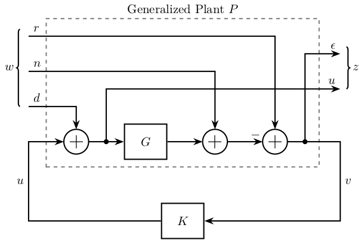
16.13 4 blocs criterion - constrains
\begin{tikzpicture} \begin{scope}[shift={(0, 0)}] \draw[] (2.5, 1.0) node[]{$S$}; \draw[fill=blue!20] (-0.2, -2.5) rectangle (1.4, 0.5); \draw[] (0.6, -0.5) node[]{$\sim GK^{-1}$}; \draw[fill=red!20] (3.6, -2.5) rectangle (5.2, 0.5); \draw[] (4.5, -0.5) node[]{$\sim 1$}; \draw[fill=red!20] (2.5, 0.15) circle (0.15); \draw[dashed] (-0.4, 0) -- (5.4, 0); \draw [] (0,-2) to[out=45,in=180+45] (2,0) to[out=45,in=180] (2.5,0.3) to[out=0,in=180] (3.5,0) to[out=0,in=180] (5, 0); \draw[dashed] (-0.5, -2.7) rectangle (5.5, 1.4); \end{scope} \begin{scope}[shift={(6.4, 0)}] \draw[] (2.5, 1.0) node[]{$GS$}; \draw[fill=blue!20] (-0.2, -2.5) rectangle (1.4, 0.5); \draw[] (0.6, -0.5) node[]{$\sim K^{-1}$}; \draw[fill=red!20] (3.6, -2.5) rectangle (5.2, 0.5); \draw[] (4.5, -0.5) node[]{$\sim G$}; \draw[dashed] (-0.4, 0) -- (5.4, 0); \draw [] (0,-2) to[out=45,in=180+45] (1, -1) to[out=45, in=180] (2.5,-0.2) to[out=0,in=180-45] (4,-1) to[out=-45,in=180-45] (5, -2); \draw[dashed] (-0.5, -2.7) rectangle (5.5, 1.4); \end{scope} \begin{scope}[shift={(0, -4.4)}] \draw[] (2.5, 1.0) node[]{$KS$}; \draw[fill=red!20] (-0.2, -2.5) rectangle (1.4, 0.5); \draw[] (0.6, -1.8) node[]{$\sim G^{-1}$}; \draw[fill=blue!20] (3.6, -2.5) rectangle (5.2, 0.5); \draw[] (4.5, -0.3) node[]{$\sim K$}; \draw[dashed] (-0.4, 0) -- (5.4, 0); \draw [] (0,-1.5) to[out=45,in=180+45] (1, -0.5) to[out=45, in=180] (2.5,0.3) to[out=0,in=180-45] (4,-0.5) to[out=-45,in=180-45] (5, -1.5); \draw[dashed] (-0.5, -2.7) rectangle (5.5, 1.4); \end{scope} \begin{scope}[shift={(6.4, -4.4)}] \draw[] (2.5, 1.0) node[]{$T$}; \draw[fill=red!20] (-0.2, -2.5) rectangle (1.4, 0.5); \draw[] (0.6, -0.5) node[]{$\sim 1$}; \draw[fill=blue!20] (3.6, -2.5) rectangle (5.2, 0.5); \draw[] (4.5, -0.5) node[]{$\sim GK$}; \draw[fill=red!20] (2.5, 0.15) circle (0.15); \draw[dashed] (-0.4, 0) -- (5.4, 0); \draw [] (0,0) to[out=0,in=180] (1.5,0) to[out=0,in=180] (2.5,0.3) to[out=0,in=-45] (3,0) to[out=-45,in=180-45] (5, -2); \draw[dashed] (-0.5, -2.7) rectangle (5.5, 1.4); \end{scope} \end{tikzpicture}

17 MIMO Control
17.1 Plant
\begin{tikzpicture} \node[block] (G) at (0, 0) {$G$}; % Connections and labels \draw[<-] (G.west) node[above left]{$\begin{bmatrix}F_1\\F_2\\F_3\end{bmatrix}$} -- ++(-1.2, 0); \draw[->] (G.east) node[above right]{$\begin{bmatrix}D_x\\D_y\\R_z\end{bmatrix}$} -- ++( 1.2, 0); \end{tikzpicture}

17.2 Plant - Leg measurement
\begin{tikzpicture} \node[block] (G) at (0, 0) {$G$}; % Connections and labels \draw[<-] (G.west) node[above left]{$\begin{bmatrix}F_1\\F_2\\F_3\end{bmatrix}$} -- ++(-1.2, 0); \draw[->] (G.east) node[above right]{$\begin{bmatrix}D_1\\D_1\\D_1\end{bmatrix}$} -- ++( 1.2, 0); \end{tikzpicture}

17.3 Jacobian
\begin{tikzpicture} \node[block] (G) at (0, 0) {$G$}; \node[block, left=1 of G] (Jf) {${J_f}^{-T}$}; % Connections and labels \draw[->] (Jf.east) -- node[midway, above]{$\begin{bmatrix}F_1\\F_2\\F_3\end{bmatrix}$} (G.west); \draw[->] (G.east) node[above right]{$\begin{bmatrix}D_x\\D_y\\R_z\end{bmatrix}$} -- ++( 1.2, 0); \draw[<-] (Jf.west) node[above left]{$\begin{bmatrix}F_x\\F_y\\M_z\end{bmatrix}$} -- ++(-1.2, 0); \end{tikzpicture}
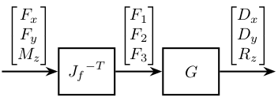
17.4 Jacobian Control - Cartesian Frame
\begin{tikzpicture} \node[block] (G) at (0, 0) {$G$}; \node[block, left=1 of G] (Jf) {${J_f}^{-T}$}; \node[block, left=1 of Jf] (K) {$K$}; \node[addb={+}{}{}{}{-}, left=1 of K] (subfb) {}; % Connections and labels \draw[<-] (subfb.west) node[above left]{$\begin{bmatrix}r_{D_x}\\r_{D_y}\\r_{R_z}\end{bmatrix}$} -- ++(-1.2, 0); \draw[->] (subfb.east) -- node[midway, above]{$\begin{bmatrix}\epsilon_{D_x}\\\epsilon_{D_y}\\\epsilon_{R_z}\end{bmatrix}$} (K.west); \draw[->] (K.east) -- node[midway, above]{$\begin{bmatrix}F_x\\F_y\\M_z\end{bmatrix}$} (Jf.west); \draw[->] (Jf.east) -- node[midway, above]{$\begin{bmatrix}F_1\\F_2\\F_3\end{bmatrix}$} (G.west); \draw[->] (G.east) node[above right]{$\begin{bmatrix}D_x\\D_y\\R_z\end{bmatrix}$} -- ++( 1.4, 0); \draw[->] ($(G.east)+(0.8,0)$)node[branch]{} -- ++(0, -1) -| (subfb.south); \end{tikzpicture}

17.5 Jacobian Control - Cartesian Frame
\begin{tikzpicture} \node[block] (G) at (0, 0) {$G$}; \node[block, left=1 of G] (K) {$K$}; \node[addb={+}{}{}{}{-}, left=1 of K] (subfb) {}; \node[block, left=1 of subfb] (Jd) {$J_d$}; % Connections and labels \draw[<-] (Jd.west) node[above left]{$\begin{bmatrix}r_{D_x}\\r_{D_y}\\r_{R_z}\end{bmatrix}$} -- ++(-1.2, 0); \draw[->] (Jd.east) -- node[midway, above]{$\begin{bmatrix}r_{D_1}\\r_{D_2}\\r_{D_3}\end{bmatrix}$} (subfb.west); \draw[->] (subfb.east) -- node[midway, above]{$\begin{bmatrix}\epsilon_{D_1}\\\epsilon_{D_2}\\\epsilon_{D_3}\end{bmatrix}$} (K.west); \draw[->] (K.east) -- node[midway, above]{$\begin{bmatrix}F_1\\F_2\\F_3\end{bmatrix}$} (G.west); \draw[->] (G.east) node[above right]{$\begin{bmatrix}D_1\\D_2\\D_3\end{bmatrix}$} -- ++( 1.4, 0); \draw[->] ($(G.east)+(0.8,0)$)node[branch]{} -- ++(0, -1) -| (subfb.south); \end{tikzpicture}
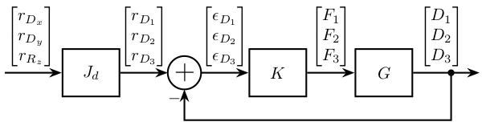
17.6 Modal Transformation
\begin{tikzpicture} \node[block] (G) at (0, 0) {$G$}; \node[block, left=1 of G] (Jf) {$J_f^{-1}$}; \node[block, left=1 of Jf] (phit) {$\Phi$}; \node[block, right=1 of G] (phi) {$\Phi^{-1}$}; \node[block, below=1 of G] (K) {$K_m$}; % Connections and labels \draw[->] (phit.east) -- node[midway, above]{$\begin{bmatrix}F_x\\F_y\\M_z\end{bmatrix}$} (Jf.west); \draw[->] (Jf.east) -- node[midway, above]{$\begin{bmatrix}F_1\\F_2\\F_3\end{bmatrix}$} (G.west); \draw[->] (G.east) -- node[midway, above]{$\begin{bmatrix}D_x\\D_y\\R_z\end{bmatrix}$} (phi.west); \draw[->] (phi.east) node[above right]{$\begin{bmatrix}\mathcal{D}_1\\\mathcal{D}_2\\\mathcal{D}_3\end{bmatrix}$} -- ++(0.8, 0) |- (K.east); \draw[<-] (phit.west) node[above left]{$\begin{bmatrix}\mathcal{F}_1\\\mathcal{F}_2\\\mathcal{F}_3\end{bmatrix}$} -- ++(-0.8, 0) |- (K.west); \end{tikzpicture}

17.7 SVD Control - Static
\begin{tikzpicture} \node[block] (G) at (0, 0) {$G$}; \node[block, left=1 of G] (V) {$V_0^{-T}$}; \node[block, right=1 of G] (U) {$U_0^{-1}$}; \node[block, below=1 of G] (K) {$K_{\Sigma_0}$}; % Connections and labels \draw[->] (V.east) -- node[midway, above]{$\begin{bmatrix}F_1\\F_2\\F_3\end{bmatrix}$} (G.west); \draw[->] (G.east) -- node[midway, above]{$\begin{bmatrix}D_x\\D_y\\R_z\end{bmatrix}$} (U.west); \draw[->] (U.east) node[above right]{$\begin{bmatrix}\mathcal{D}_1\\\mathcal{D}_2\\\mathcal{D}_3\end{bmatrix}$} -- ++(0.8, 0) |- (K.east); \draw[<-] (V.west) node[above left]{$\begin{bmatrix}\mathcal{F}_1\\\mathcal{F}_2\\\mathcal{F}_3\end{bmatrix}$} -- ++(-0.8, 0) |- (K.west); \end{tikzpicture}

17.8 Inverse Based Control
\begin{tikzpicture} \node[block] (G) at (0, 0) {$G$}; \node[block, left=1 of G] (W1) {$W_1$}; \node[block, below=1 of G] (K) {$K_{\text{inv}}$}; % Connections and labels \draw[->] (W1.east) -- node[midway, above]{$\begin{bmatrix}F_x\\F_y\\M_z\end{bmatrix}$} (G); \draw[->] (G.east) node[above right]{$\begin{bmatrix}\mathcal{D}_x\\\mathcal{D}_y\\\mathcal{R}_z\end{bmatrix}$} -- ++(0.8, 0) |- (K.east); \draw[<-] (W1.west) node[above left]{$\begin{bmatrix}\mathcal{F}_x\\\mathcal{F}_y\\\mathcal{M}_z\end{bmatrix}$} -- ++(-0.8, 0) |- (K.west); \end{tikzpicture}
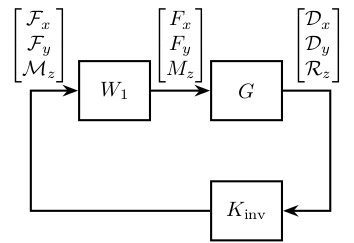
17.9 MIMO Sensor Fusion
\begin{tikzpicture} \node[addb={+}{}{}{}{-}] (addfb) at (0, 0){}; \node[block, right=0.75 of addfb] (K){$K$}; \node[block, right=1.5 of K] (G){$G^\prime$}; \node[addb={+}{}{}{}{}, right=0.75 of G] (adddy){}; \coordinate[] (KG) at ($0.5*(K.east)+0.5*(G.west)$); \node[block, below=0.75 of KG] (Gm){$G$}; \node[block, below=0.75 of Gm] (Hh){$H_H$}; \node[addb={+}{}{}{}{}, below=0.75 of Hh] (addsf){}; \node[block] (Hl) at (addsf-|G) {$H_L$}; \node[addb={+}{}{}{}{}, right=1.5 of Hl] (addn) {}; \draw[->] (addfb.east) -- (K.west) node[above left]{}; \draw[->] (K.east) -- (G.west) node[above left]{$u$}; \draw[->] (KG) node[branch]{} -- (Gm.north); \draw[->] (Gm.south) -- (Hh.north); \draw[->] (Hh.south) -- (addsf.north) node[above left]{}; \draw[->] (Hl.west) -- (addsf.east); \draw[->] (addsf.west) -| (addfb.south) node[below right]{}; \draw[->] (G.east) -- (adddy.west); \draw[<-] (addn.east) -- ++(0.75, 0) coordinate[](endpos) node[above left]{$n$}; \draw[->] (adddy.east) -- (G-|endpos) node[above left]{$y$}; \draw[->] (adddy-|addn) node[branch]{} -- (addn.north); \draw[<-] (addfb.west) -- ++(-0.75, 0) node[above right]{$r$}; \draw[->] (addn.west) -- (Hl.east) node[above right]{$y_m$}; \draw[<-] (adddy.north) -- ++(0, 0.75) node[below right]{$d_y$}; \end{tikzpicture}

17.10 MIMO Sensor Fusion - Equivalent Feedback Control
\begin{tikzpicture} \node[addb={+}{}{}{}{-}] (addfb) at (0, 0){}; \node[block, right=0.75 of addfb] (K){$K_{\text{fb}}$}; \node[block, right=0.75 of K] (G){$G^\prime$}; \node[addb={+}{}{}{}{}, right=0.75 of G] (adddy){}; \node[addb={+}{}{}{}{}, below right=0.75 and 0.5 of adddy] (addn) {}; \node[block] (Hl) at (G|-addn) {$H_L$}; \draw[->] (addfb.east) -- (K.west) node[above left]{}; \draw[->] (K.east) -- (G.west) node[above left]{$u$}; \draw[->] (G.east) -- (adddy.west); \draw[<-] (addn.east) -- ++(0.75, 0) coordinate[](endpos) node[above left]{$n$}; \draw[->] (G-|addn)node[branch]{} -- (addn.north); \draw[->] (adddy.east) -- (G-|endpos) node[above left]{$y$}; \draw[<-] (addfb.west) -- ++(-0.75, 0) node[above right]{$r$}; \draw[->] (addn.west) -- (Hl.east); \draw[->] (Hl.west) -| (addfb.south); \draw[<-] (adddy.north) -- ++(0, 0.75) node[below right]{$d_y$}; \end{tikzpicture}
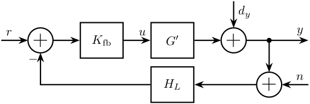
17.11 MIMO Sensor Fusion - Equivalent Feedback Control - bis
\begin{tikzpicture} \node[addb={+}{}{}{}{-}] (addfb) at (0, 0){}; \node[block, right=0.75 of addfb] (Hh){${H_H}^{-1}$}; \node[block, right=0.75 of Hh] (Ginv){$G^{-1}$}; \node[block, right=0.75 of Ginv] (G){$G^\prime$}; \node[addb={+}{}{}{}{}, right=0.75 of G] (adddy){}; \node[addb={+}{}{}{}{}, below right=0.75 and 0.5 of adddy] (addn) {}; \node[block] (Hl) at (G|-addn) {$H_L$}; \draw[->] (addfb.east) -- (Hh.west) node[above left]{}; \draw[->] (Hh.east) -- (Ginv.west) node[above left]{}; \draw[->] (Ginv.east) -- (G.west) node[above left]{$u$}; \draw[->] (G.east) -- (adddy.west); \draw[<-] (addn.east) -- ++(0.75, 0) coordinate[](endpos) node[above left]{$n$}; \draw[->] (G-|addn)node[branch]{} -- (addn.north); \draw[->] (adddy.east) -- (G-|endpos) node[above left]{$y$}; \draw[<-] (addfb.west) -- ++(-0.75, 0) node[above right]{$r$}; \draw[->] (addn.west) -- (Hl.east); \draw[->] (Hl.west) -| (addfb.south); \draw[<-] (adddy.north) -- ++(0, 0.75) node[below right]{$d_y$}; \end{tikzpicture}
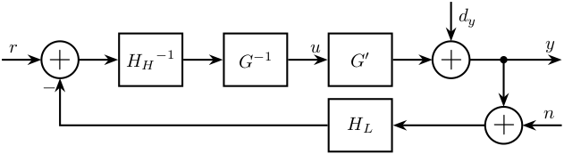
18 Others
18.1 Huddle test
\begin{tikzpicture} \coordinate[] (U) at (0, 0) {}; \node[addb={+}{}{}{}{}, above right=1 and 2 of U] (add1) {}; \node[addb={+}{}{}{}{}, below right=1 and 2 of U] (add2) {}; \node[block, right=0.5 of add1] (S1) {$S_1$}; \node[block, right=0.5 of add2] (S2) {$S_2$}; \draw[] (U) node[above right]{$U$} -- ++(1, 0) node[]{$\bullet$}; \draw[->] ($(U)+(1, 0)$) |- (add1.west); \draw[->] ($(U)+(1, 0)$) |- (add2.west); \draw[->] (add1.east) -- (S1.west); \draw[->] (add2.east) -- (S2.west); \draw[->] (S1.east) -- ++(1, 0) node[above]{$X$}; \draw[->] (S2.east) -- ++(1, 0) node[above]{$Y$}; \draw[<-] (add1.north) -- ++(0, 0.8)node[right]{$N$}; \draw[<-] (add2.north) -- ++(0, 0.8)node[right]{$M$}; \end{tikzpicture}

18.2 Coprime uncertainty
\begin{tikzpicture} % Blocs \node[block] (K) {$-K$}; \node[addb={+}{+}{+}{}{}, above=1 of K] (add) {}; \node[addb={+}{+}{}{-}{}, above=1 of add] (sub) {}; \node[block, right=1 of add] (Ml) {$M_l^{-1}$}; \node[block, left =1 of add] (Nl) {$N_l$}; \node[block, right=1 of sub] (Dm) {$\Delta_M$}; \node[block, left =1 of sub] (Dn) {$\Delta_N$}; % Connections and labels \draw[->] (K.west) -- ++(-3, 0) |- (Nl.west); \draw[->] ($(Nl.west) + (-0.6, 0)$)node[branch]{} |- (Dn.west); \draw[->] (Dn.east) -- (sub.west); \draw[->] (Nl.east) -- (add.west); \draw[->] (sub.south) -- (add.north); \draw[->] (add.east) -- (Ml.west); \draw[<-] (sub.east) -- (Dm.west); \draw[<-] (K.east) -- ++(3, 0) |- (Ml.east); \draw[->] ($(Ml.east) + (0.6, 0)$)node[branch]{} |- (Dm.east); \end{tikzpicture}
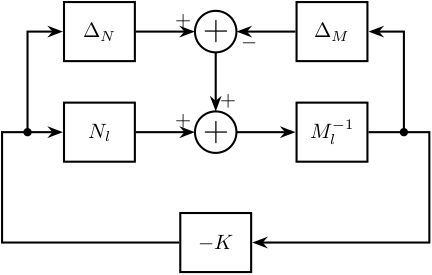
18.3 Coprime uncertainty - Bis
\begin{tikzpicture} % Blocs \node[block] (K) {$-K$}; \node[addb={+}{+}{+}{}{}, above=1 of K] (add) {}; \node[addb={+}{+}{}{-}{}, above=1 of add] (sub) {}; \node[block, right=1 of add] (Ml) {$M^{-1}$}; \node[block, left =1 of add] (Nl) {$N$}; \node[block, right=1 of sub] (Dm) {$\Delta_M$}; \node[block, left =1 of sub] (Dn) {$\Delta_N$}; % Connections and labels \draw[->] (K.west) -- ++(-3, 0) |- (Nl.west); \draw[->] ($(Nl.west) + (-0.6, 0)$)node[branch]{}node[below]{$u$} |- (Dn.west); \draw[->] (Dn.east) -- (sub.west); \draw[->] (Nl.east) -- (add.west); \draw[->] (sub.south) -- node[midway, left]{$\phi$} (add.north); \draw[->] (add.east) -- (Ml.west); \draw[<-] (sub.east) -- (Dm.west); \draw[<-] (K.east) -- ++(3, 0) |- (Ml.east); \draw[->] ($(Ml.east) + (0.6, 0)$)node[branch]{}node[below]{$y$} |- (Dm.east); \end{tikzpicture}
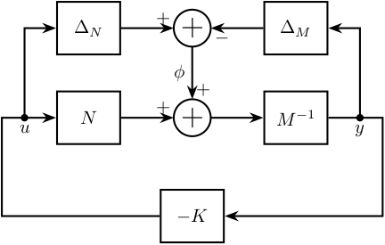
18.4 Shaped Plant
\begin{tikzpicture} \node[block] (G) {$G$}; \node[block, left =1 of G] (W1) {$W_1$}; \node[block, right=1 of G] (W2) {$W_2$}; \node[block, below=0.6 of G] (Ks) {$K_s$}; \node[fit={($(W2.north east) + (0.5, 0.2)$) ($(W1.south west) - (0.5, 0.2)$)}, inner sep=0pt, draw, dashed, color=gray, label={$G_s$}] (Gs) {}; \draw[->] (W1.east) -- (G.west); \draw[->] (G.east) -- (W2.west); \draw[->] (W2.east) -- ++(0.8, 0) |- (Ks.east); \draw[<-] (W1.west) -- ++(-0.8, 0) |- (Ks.west); \end{tikzpicture}

18.5 Practical Implementation
\begin{tikzpicture} \node[block] (prefilter) {$K_s(0)W_2(0)$}; \node[addb={+}{-}{}{}{+}, right=0.6 of prefilter] (addb) {}; \node[block, right=1 of addb] (W1) {$W_1$}; \node[block, right=1 of W1] (G) {$G$}; \node[block, below=0.6 of G] (W2) {$W_2$}; \node[block, below=0.6 of W1] (Ks) {$K_s$}; \draw[<-] (prefilter.west) -- ++(-0.6, 0) node[above right]{$r$}; \draw[->] (prefilter.east) -- (addb.west); \draw[->] (addb.east) --node[midway, above]{$u_s$} (W1.west); \draw[->] (W1.east) --node[midway, above]{$u$} (G.west); \draw[->] (G.east) -- ++(1, 0) node[above left]{$y$}; \draw[->] ($(G.east)+(0.4, 0)$)node[branch]{} |- (W2); \draw[->] (W2.west) --node[midway, above]{$y_s$} (Ks.east); \draw[->] (Ks.west) -| (addb.south); % \draw[->] (W2.east) -- ++(0.8, 0) |- (Ks.east); % \draw[<-] (W1.west) -- ++(-0.8, 0) |- (Ks.west); \end{tikzpicture}

18.6 Anti-Windup
\begin{tikzpicture} \node[block={1cm}{1.5cm}] (W1) {$W_1$}; \node[block={1.5cm}{1.5cm}, right=1 of W1, label={[align=center]Actuator\\Saturation}] (sat) {}; \node[block, right=1 of sat] (G) {$G$}; % Saturation \draw[->, line width=0.5pt] ($(sat.west)!0.1!(sat.east)$) -- ($(sat.west)!0.9!(sat.east)$); \draw[->, line width=0.5pt] ($(sat.south)!0.1!(sat.north)$) -- ($(sat.south)!0.9!(sat.north)$); \draw[line width=0.5pt] ($(sat.south west)!0.3!(sat.north east)-(0.1, 0)$) -- ++(0.2, 0) -- ($(sat.south west)!0.7!(sat.north east)+(-0.1, 0)$) -- ($(sat.south west)!0.7!(sat.north east)+(0.1, 0)$); % Inputs of the controllers \coordinate[] (inputr) at ($(W1.south west)!0.75!(W1.north west)$); \coordinate[] (inputy) at ($(W1.south west)!0.25!(W1.north west)$); % Connections and labels \draw[<-] (inputr) -- ++(-0.8, 0) node[above right]{$u_s$}; \draw[->] (W1.east) -- node[midway, above]{$u$} (sat.west); \draw[->] (sat.east) -- (G.west); \draw[<-] (inputy) -| ++(-0.6, -0.8) -| ($(sat.east)!0.5!(G.west)$)node[branch]{}node[above]{$u_a$}; \draw[->] (G.east) -- ++(0.8, 0); \end{tikzpicture}

18.7 Block Diagonal Scalings
\begin{tikzpicture} % Blocs \node[block={1.5cm}{1.5cm}] (delta) {$\begin{matrix}\Delta_1 & & \\ & \Delta_2 & \\ & & \ddots \end{matrix}$}; \node[block, right=1 of delta] (Dm) {$D^{-1}$}; \node[block, left=1 of delta] (D) {$D$}; \node[block={1.5cm}{1cm}, below=1.5 of delta] (M) {$M$}; \node[block] (Dbm) at (M-|D) {$D^{-1}$}; \node[block] (Db) at (M-|Dm) {$D$}; % Connections \draw[->] (Dbm.east) -- (M.west); \draw[->] (M.east) -- (Db.west); \draw[->] (Db.east) -- ++(1, 0) |- (Dm.east); \draw[->] (Dm.west) -- (delta.east); \draw[->] (delta.west) -- (D.east); \draw[->] (D.west) -- ++(-1, 0) |- (Dbm.west); \node[fit={($(delta.north-|Dm.east) + (0.5, 0.2)$) ($(delta.south-|D.west) - (0.5, 0.2)$)}, inner sep=0pt, draw, dashed, color=gray, label={Same Uncertainty}] (top) {}; \node[fit={($(Db.north east) + (0.5, 0.2)$) ($(Dbm.south west) - (0.5, 0.2)$)}, inner sep=0pt, draw, dashed, color=gray, label={New $M \quad DMD^{-1}$}] (bot) {}; \end{tikzpicture}